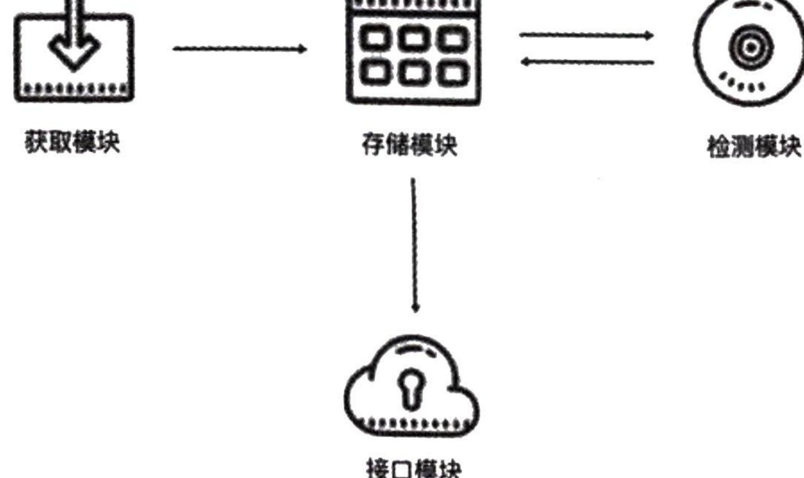
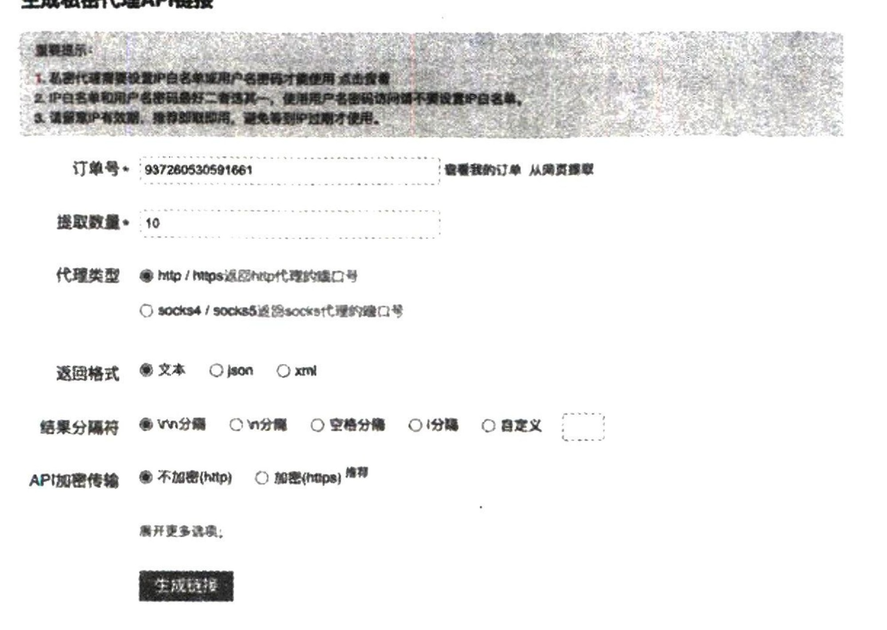
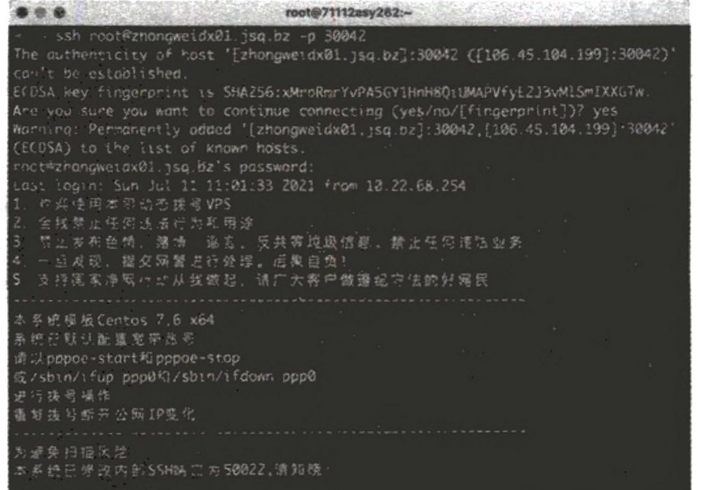
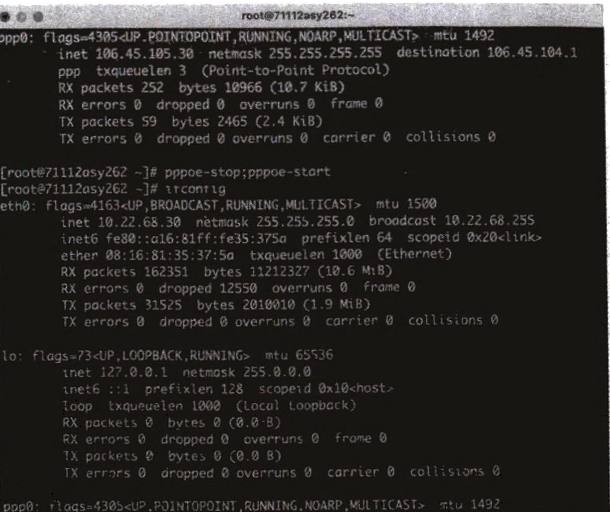
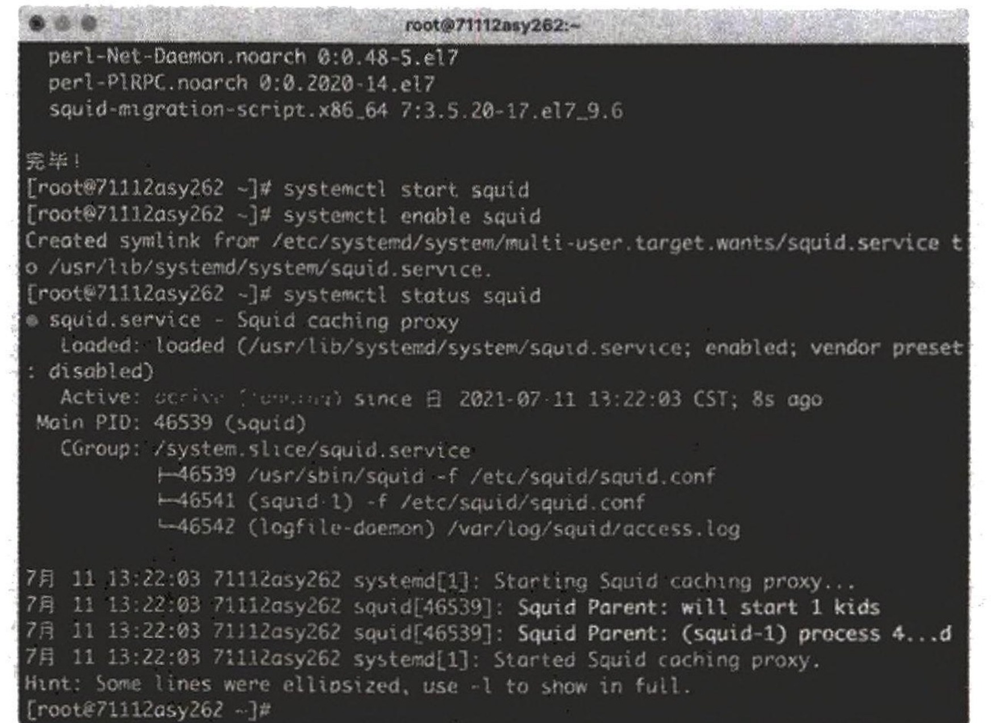
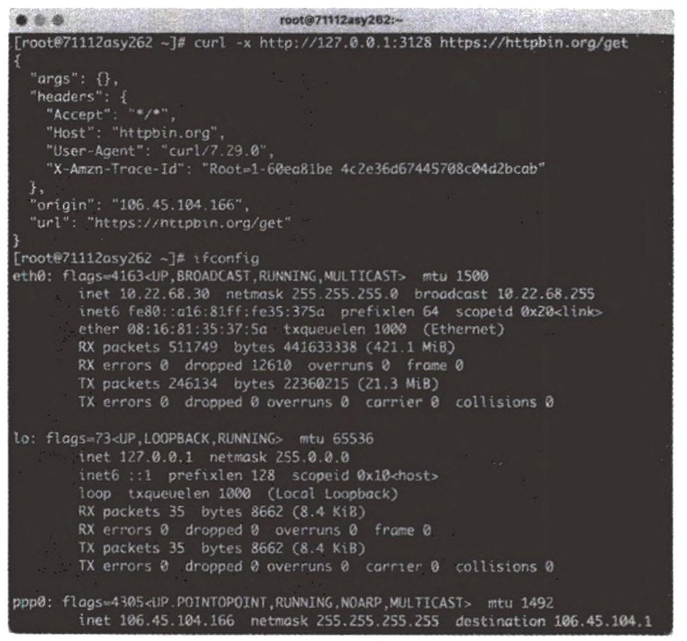
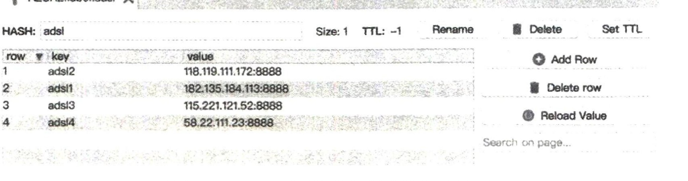
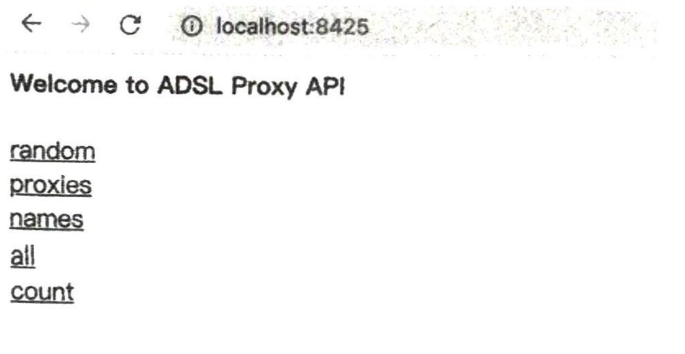
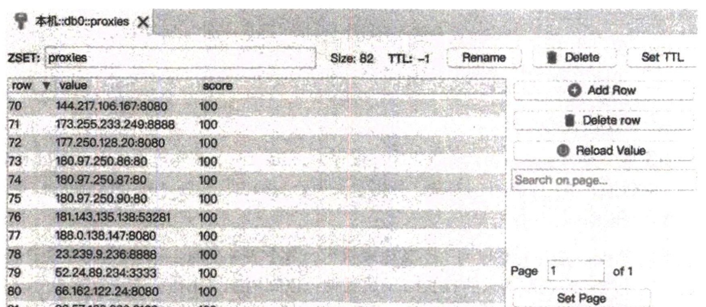
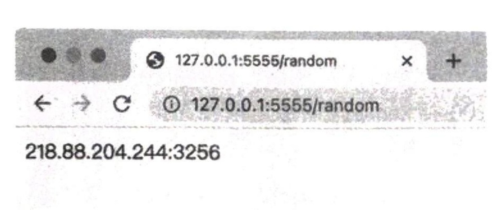

在使用爬虫的过程中经常会遇到这样的情况,爬虫最初还可以正常运行,正常爬取数据,一切看起来都是那么美好,然而一杯茶的工夫过去,就可能出现了错误,比如返回403 Forbidden,这时打开网页,可能会看到“您的IP访问频率太高”这样的提示,或者跳出一个验证码让我们识别,通过之后才可以访问,但是过一会儿又会变成这样。出现上述现象的原因是网站采取了一些反爬虫措施。例如服务器会检测某个IP在单位时间内的请求次数,如果这个次数超过了指定的阈值,就直接拒绝服务,并返回一些错误信息,这种情况可以称为封IP。这样,网站就成功把我们的爬虫封禁了。既然服务器检测的是某个IP在单位时间内的请求次数,那么借助某种方式把IP伪装起来,让服务器识别不出是由我们本机发起的请求,不就可以成功防止封IP了吗?这时代理就派上用场了。本章会详细介绍代理的基本知识以及各种代理的使用方式,包括代理的设置、代理池的维护、付费代理的使用、ADSL拨号代理的搭建方法等内容,希望能够帮助爬虫脱离封IP的苦海。
9.1 代理的设置
我们在第2章和第7章介绍了很多请求库,例如urllib、requests、Selenium、Pyppeteer、Playwright等,但是没有统一梳理过代理的设置方法,本节我们就针对这些库梳理一下代理的设置方法。
1. 准备工作
请先了解一下代理的基本原理,参考本书1.5节即可,这有助于更好地理解和学习本节内容。另外,需要先获取一个可用代理,代理就是IP 地址和端口的组合,格式是<ip>:<port>。如果代理需要访问认证,则还需要额外的用户名和密码两个信息。那怎么获取一个可用代理呢?使用搜索引擎搜索“代理”关键字,会返回许多代理服务网站,网站上有很多免费代理或付费代理,例如快代理的免费HTTP代理 https://www.kuaidaili.com/free/就提供了很多免费代理,但在大多数情况下这些免费代理并不一定稳定,所以比较靠谱的方法是购买付费代理。付费代理的各大代理商家都有套餐,数量不多,稳定可用,可以自行选购。除了购买付费代理,也可以在本机配置一些代理软件,具体的配置方法可以参考 https://setup.scrape.center/proxy-client,运行代理软件后会在本机创建HTTP或SOCKS代理服务,所以代理地址一般是 127.0.0.1:<port>这样的格式,不同代理软件使用的端口可能不同。我的本机上安装着一个代理软件,它会在7890端口上创建HTTP代理服务,在7891端口上创建SOCKS 代理服务,因此HTTP代理地址为127.0.0.1:7890, SOCKS 代理地址为127.0.0.1:7891,只要设置了这个代理,就可以成功将本机IP 切换到代理软件连接的服务器的IP。在本章之后的示例里,我将使用这个代理软件演示设置方法,大家可以替换成自己的可用代理。
设置代理后的测试网址是http://www.httpbin.org/get,访问该链接可以得到请求相关的信息,返回结果中的 origin 字段就是客户端的IP,我们可以根据它判断代理是否设置成功,即是否成功伪装了IP。接下来就看一下各个请求库是如何设置代理的吧。
2. urllib 的代理设置
先介绍最基础的urllib,代码如下:
from urllib.error import URLError
from urllib.request import ProxyHandler, build_openerproxy = '127.0.0.1:7890'
proxy_handler = ProxyHandler({
'http': 'http://' + proxy,
'https': 'http://' + proxy
})
opener = build_opener(proxy_handler)
try:
response = opener.open('https://www.httpbin.org/get')
print(response.read().decode('utf-8'))
except URLError as e:
print(e.reason)这里需要借助 ProxyHandler 对象设置代理,参数是字典类型的数据,键名是协议类型,键值是代理地址(注意,此处的代理地址前面需要加上协议,即http://或者https://),当请求链接使用的是HTTP 协议时,使用http键名对应的代理地址,当请求链接使用的是HTTPS协议时,使用https 键名对应的代理地址。这里我们把代理本身设置为使用HTTP协议,即代理地址前统一加 http://。创建完 ProxyHandler对象之后,调用 build_opener方法并传入该对象,创建了一个 Opener 对象,赋值为 opener 变量,这样相当于此对象已经设置好代理了。接着直接调用 opener 变量的open方法,就访问到了目标链接。运行结果如下:
{
"args": {},
"headers": {
"Accept-Encoding": "identity",
"Host": "www.httpbin.org",
"User-Agent": "Python-urllib/3.7",
"X-Amzn-Trace-Id": "Root=1-60e9a1b6-0a20b8a678844a0b2ab4e889"
},
"origin": "210.173.1.204",
"url": "https://www.httpbin.org/get"
}可以看到结果是JSON数据,其中有一个origin字段,标明了客户端的IP。验证之后,此处的IP确实为代理IP,并不是真实IP。这样我们就成功设置好代理,并可以隐藏真实IP了。如果遇到需要认证的代理,可以使用如下方法设置:
from urllib.error import URLError
from urllib.request import ProxyHandler, build_openerproxy = 'username:password@127.0.0.1:7890'
proxy_handler = ProxyHandler({
'http': 'http://' + proxy,
'https': 'http://' + proxy
})
opener = build_opener(proxy_handler)
try:
response = opener.open('https://www.httpbin.org/get')
print(response.read().decode('utf-8'))except URLError as e:
print(e.reason)跟上面的代码相比,这里只是改变了proxy 变量的值,只需要在原来值的前面加入代理认证的用户名和密码即可,其中 username 是用户名,password是密码。例如用户名是 foo,密码是bar,代理地址就是 foo:bar@127.0.0.1:7890。如果代理是 SOCKS 类型,那么可以用如下方式设置代理,注意需要在本机 7891 端口运行一个SOCKS 代理:
import socks
import socket
from urllib import request
from urllib.error import URLError
socks.set_default_proxy(socks.SOCKS5, '127.0.0.1', 7891)socket.socket = socks.socksocket
try:
response = request.urlopen('https://www.httpbin.org/get')
print(response.read().decode('utf-8'))
except URLError as e:
print(e.reason)此处需要用到一个socks模块,可以执行如下命令安装:
pip3 install PySocks运行成功后的结果和使用HTTP代理的结果一样:
{
"args": {},
},
"headers": {
"Accept-Encoding": "identity",
"Host": "www.httpbin.org",
"User-Agent": "Python-urllib/3.7",
"origin": "210.173.1.204",
"X-Amzn-Trace-Id": "Root=1-60e9a1b6-0a20b8a678844a0b2ab4e889"
"url": "https://www.httpbin.org/get"
}结果中的 origin 字段同样为客户端的IP,证明 SOCKS 代理设置成功。
3. requests 的代理设置
对于 requests 来说,代理设置非常简单,只需要传入 proxies 参数即可。这里以我本机的代理为例,看一下 requests 的HTTP代理设置,代码如下:
import requests
proxy = '127.0.0.1:7890'
proxies = {
'http': 'http://' + proxy,
'https': 'http://' + proxy,
}
try:
response = requests.get('https://www.httpbin.org/get', proxies=proxies)
print(response.text)
except requests.exceptions.ConnectionError as e:
print('Error', e.args)运行结果如下:
{
"args": {},
"headers": {
"Accept": "*/*","Accept-Encoding": "gzip, deflate",
"Host": "www.httpbin.org",
"User-Agent": "python-requests/2.22.0",
"X-Amzn-Trace-Id": "Root=1-5e8f358d-87913f68a192fb9f87aa0323"
"origin": "210.173.1.204",
},
"url": "https://www.httpbin.org/get"
}和 urllib一样,当请求链接使用的是HTTP协议时,使用http键名对应的代理地址,当请求链接使用的是HTTPS协议时,使用https键名对应的代理地址,不过这里的代理同样统一使用HTTP协议。运行结果中的 origin 字段若是代理服务器的IP,则证明代理已经设置成功。如果代理需要认证,那么在代理地址的前面加上用户名和密码即可,写法如下:
`proxy = 'username: password@127.0.0.1:7890'`大家在使用时,根据自己的情况替换 username 和 password 字段即可。如果代理类型是SOCKS,可以使用如下方式设置代理:
import requests
proxy = '127.0.0.1:7891'
proxies = {
'http': 'socks5://' + proxy,
'https': 'socks5://' + proxy
}
try:
response = requests.get('https://www.httpbin.org/get', proxies=proxies)
print(response.text)
except requests.exceptions.ConnectionError as e:
print('Error', e.args)这里我们需要额外安装一个包 requests[socks],相关命令如下:
`pip3 install "requests [socks]"`运行结果和使用HTTP代理的结果完全相同:
{
"args": {},
"headers": {
"Accept": "*/*",
"Accept-Encoding": "gzip, deflate",
"Host": "www.httpbin.org",
"User-Agent": "python-requests/2.22.0",
"X-Amzn-Trace-Id": "Root=1-5e8f364a-589d3cf2500fafd47b5560f2"
"origin": "210.173.1.204",
},
"url": "https://www.httpbin.org/get"
}另外,还有一种设置 SOCKS 代理的方法,即使用socks模块,需要安装socks库,这种设置方法如下:
import requests
import socks
import socket
socks.set_default_proxy(socks.SOCKS5, '127.0.0.1', 7891)
socket.socket = socks.socksocket
try:
response = requests.get('https://www.httpbin.org/get')
print(response.text)
except requests.exceptions.ConnectionError as e:
print('Error', e.args)运行结果和上面是完全相同的。相比第一种方法,此方法属于全局设置。大家可以在不同情况下选用不同的方法。
4. httpx 的代理设置
httpx 的用法本身就与 requests 的非常相似,所以也是通过proxies 参数设置代理,不过也有不同,就是 proxies 参数的键名不能再是http或https,而需要改为http://或https://。设置HTTP代理的方式如下:
import httpx
proxy = '127.0.0.1:7890'
proxies = {
'http://': 'http://' + proxy,
'https://': 'http://' + proxy,
}
with httpx.Client (proxies=proxies) as client:
response = client.get('https://www.httpbin.org/get')
print(response.text)对于需要认证的代理,也是在代理地址的前面加上用户名和密码,在使用的时候替换 username 和password 字段:
proxy = 'username: password@127.0.0.1:7890'运行结果如下:
{
"args": {},
"headers": {
"Accept": "*/*",
"Accept-Encoding": "gzip, deflate",
"Host": "www.httpbin.org",
"User-Agent": "python-httpx/0.18.1",
"X-Amzn-Trace-Id": "Root=1-60e9a3ef-5527ff6320484f8e46d39834"
"origin": "210.173.1.204",
},
"url": "https://www.httpbin.org/get"
}对于 SOCKS 代理,需要安装 httpx-socks[asyncio]库,安装方法如下:
pip3 install "httpx-socks [asyncio]"与此同时,需要设置同步模式或异步模式。同步模式的设置方法如下:
import httpx
from httpx_socks import SyncProxyTransport
transport = SyncProxyTransport.from_url('socks5://127.0.0.1:7891')
with httpx.Client(transport=transport) as client:
response = client.get('https://www.httpbin.org/get')
print(response.text)这里设置了一个Transport 对象,并在其中配置了SOCKS代理的地址,同时在声明httpx 的Client对象时将此对象传给 transport 参数,运行结果和刚才一样。异步模式的设置方法如下:
import httpx
import asyncio
from httpx_socks import AsyncProxyTransport
transport = AsyncProxyTransport.from_url(
'socks5://127.0.0.1:7891')
async def main():
async with httpx.AsyncClient(transport=transport) as client:
response = await client.get('https://www.httpbin.org/get')
print(response.text)
if __name__ == '__main__':
asyncio.get_event_loop().run_until_complete(main())和同步模式不同,此处我们用的 Transport 对象是 AsyncProxyTransport 而不是 SyncProxyTransport,同时需要将 Client 对象更改为 AsyncClient 对象,其他的和同步模式一样,运行结果也是一样的。
5. Selenium 的代理设置
Selenium 同样可以设置代理,这里以 Chrome 浏览器为例介绍设置方法。对于无认证的代理,设置方法如下:
from selenium import webdriver
proxy = '127.0.0.1:7890'
options = webdriver.ChromeOptions()
options.add_argument('--proxy-server=http://' + proxy)
browser = webdriver.Chrome(options=options)
browser.get('https://www.httpbin.org/get')
print(browser.page_source)
browser.close()运行结果如下:
{
"args": {},
"headers": {
"Accept": "text/html,application/xhtml+xml,application/xml;q=0.9,image/webp, image/apng,*/*;q=0.8, application/signed-exchange;v=b3;q=0.9",
"Accept-Encoding": "gzip, deflate",
"Accept-Language": "zh-CN, zh;q=0.9",
"Host": "www.httpbin.org",
"Upgrade-Insecure-Requests": "1",
"User-Agent": "Mozilla/5.0 (Macintosh; Intel Mac OS X 10_15_4) AppleWebKit/537.36 (KHTML, like Gecko) Chrome/80.0.3987.149 Safari/537.36",
"X-Amzn-Trace-Id": "Root=1-5e8f39cd-60930018205fd154a9af39cc"
},
"origin": "210.173.1.204",
"url": "http://www.httpbin.org/get"
}结果中的 origin 字段同样为客户端的 IP,证明代理设置成功。如果代理需要认证,则设置方法相对比较烦琐,具体如下:
from selenium import webdriver
from selenium.webdriver.chrome.options import Options
import zipfile
ip = '127.0.0.1'
port = 7890
username = 'foo'
password = 'bar'
manifest_json = """{"version":"1.0.0","manifest_version": 2, "name": "Chrome Proxy", "permissions":
["proxy", "tabs", "unlimitedStorage","storage","<all_urls>","webRequest", "webRequestBlocking"], "background":
{"scripts": ["background.js"]
}
}"""background_js = """
var config = {
mode: "fixed_servers",
rules: {
singleProxy: {
scheme: "http",
host: "%(ip)s",
port: %(port)s
}
}
}
"""
chrome.proxy.settings.set({value: config, scope: "regular"}, function() {});
function callbackFn(details) {
return {
authCredentials: {username: "%(username)s",
password: "%(password)s"}
}
}
chrome.webRequest.onAuthRequired.addListener(
callbackFn, {urls: ["<all_urls>"]}, ['blocking'])
""" % {'ip': ip, 'port': port, 'username': username, 'password': password}plugin_file = 'proxy_auth_plugin.zip'
with zipfile.ZipFile(plugin_file, 'w') as zp:
zp.writestr("manifest.json", manifest_json)
zp.writestr("background.js", background_js)
options = Options()
options.add_argument("--start-maximized")
options.add_extension(plugin_file)
browser = webdriver.Chrome(options=options)
browser.get('https://www.httpbin.org/get')
print(browser.page_source)
browser.close()这里在本地创建了一个 manifest.json 配置文件和 background.js 脚本来设置认证代理。运行代码后,本地会生成一个 proxy_auth_plugin.zip 文件来保存当前的配置。
运行结果和上面一样, origin 字段为客户端的 IP, 证明代理设置成功。
SOCKS 代理的设置方式也比较简单, 把对应的协议修改为 socks5 即可, 如无密码认证的代理设置方法为:
from selenium import webdriver
proxy = '127.0.0.1:7891'
options = webdriver.ChromeOptions()
options.add_argument('--proxy-server=socks5://' + proxy)
browser = webdriver.Chrome(options=options)
browser.get('https://www.httpbin.org/get')
print(browser.page_source)
browser.close()运行结果和上面一样。
6. aiohttp 的代理设置
对于 aiohttp, 可以通过 proxy 参数直接设置代理。HTTP 代理的设置方式如下:
import asyncio
import aiohttp
proxy = 'http://127.0.0.1:7890'async def main():
async with aiohttp.ClientSession() as session:
async with session.get('https://www.httpbin.org/get', proxy=proxy) as response:
print(await response.text())
if __name__ == '__main__':
asyncio.get_event_loop().run_until_complete(main())如果代理需要认证,就把代理地址修改一下:
proxy = 'http://username: password@127.0.0.1:7890'对于 SOCKS 代理,需要安装一个支持库 aiohttp-socks,安装命令如下:
pip3 install aiohttp-socks可以借助这个库的ProxyConnector 方法来设置 SOCKS 代理,代码如下:
import asyncio
import aiohttp
from aiohttp_socks import ProxyConnector
connector = ProxyConnector.from_url('socks5://127.0.0.1:7891')
async def main():
async with aiohttp.ClientSession(connector=connector) as session:
async with session.get('https://www.httpbin.org/get') as response:
print(await response.text())
if __name__ == '__main__':
asyncio.get_event_loop().run_until_complete(main())运行结果依然和之前一样。另外,aiohttp-socks 库还支持设置 SOCKS4 代理、HTTP 代理以及需要认证的代理,详情可以参考官方介绍。
7. Pyppeteer 的代理设置
对于Pyppeteer,由于其默认使用的是类似 Chrome 的 Chromium 浏览器,因此设置代理的方法和使用Chrome 浏览器的 Selenium一样,例如都是通过 args 参数设置HTTP代理的,代码如下:
import asyncio
from pyppeteer import launch
proxy = '127.0.0.1:7890'
async def main():
browser = await launch({'args': ['--proxy-server=http://' + proxy], 'headless': False})
page = await browser.newPage()
await page.goto('https://www.httpbin.org/get')
print(await page.content())
await browser.close()
if __name__ == '__main__':
asyncio.get_event_loop().run_until_complete(main())运行结果如下:
{
"args": {},
"headers": {
"Accept": "text/html,application/xhtml+xml,application/xml;q=0.9,image/webp, image/apng, */*;q=0.8",
"Accept-Encoding": "gzip, deflate, br",
"Accept-Language": "zh-CN, zh;q=0.9",
"Host": "www.httpbin.org",
"Upgrade-Insecure-Requests": "1",
"User-Agent": "Mozilla/5.0 (Macintosh; Intel Mac OS X 10_15_4) AppleWebKit/537.36 (KHTML, like Gecko) Chrome/69.0.3494.0 Safari/537.36",
"X-Amzn-Trace-Id": "Root=1-5e8f442c-12b1ed7865b049007267a66c"
},
"origin": "210.173.1.204",
"url": "https://www.httpbin.org/get"
}同样可以通过 origin 字段证明代理设置成功。SOCKS 代理也一样,只需要将协议修改为socks5即可,代码如下:
import asyncio
from pyppeteer import launchproxy = '127.0.0.1:7891'async def main():
browser = await launch({'args': ['--proxy-server=socks5://' + proxy], 'headless': False})
page = await browser.newPage()
await page.goto('https://www.httpbin.org/get')
print(await page.content())
await browser.close()if __name__ == '__main__':
asyncio.get_event_loop().run_until_complete(main())运行结果也是一样的。
8. Playwright 的代理设置
相对 Selenium 和 Pyppeteer, Playwright 的代理设置更加方便,因为其预留了一个 proxy 参数,在 启动的时候就可以设置。对于HTTP代理来说,可以这样设置:
from playwright.sync_api import sync_playwrightwith sync_playwright() as p:
browser = p.chromium.launch(proxy={
'server': 'http://127.0.0.1:7890'
})
page = browser.new_page()
page.goto('https://www.httpbin.org/get')
print(page.content())
browser.close()在调用 launch 方法的时候,可以传入 proxy 参数,它是一个字典,其中有一个必填的字段叫作 server,这里我们直接填入HTTP代理的地址即可。运行结果如下:
{
"args": {},
"headers": {
"Accept": "text/html,application/xhtml+xml,application/xml;q=0.9,image/avif,image/webp,image/apng,*/*;q=0.8,application/signed-exchange;v=b3;q=0.9",
"Accept-Encoding": "gzip, deflate, br",
"Accept-Language": "zh-CN, zh;q=0.9",
"Host": "www.httpbin.org",
"Sec-Ch-Ua": "\" Not A; Brand\";v=\"99\", \"Chromium\";v=\"92\"",
"Sec-Ch-Ua-Mobile": "?0",
"Sec-Fetch-Dest": "document",
"Sec-Fetch-Mode": "navigate",
"Sec-Fetch-Site": "none"
}
}"Sec-Fetch-User": "?1",
"Upgrade-Insecure-Requests": "1",
"User-Agent": "Mozilla/5.0 (Macintosh; Intel Mac OS X 10_15_7) AppleWebKit/537.36 (KHTML, like Gecko)Chrome/92.0.4498.0 Safari/537.36",
"X-Amzn-Trace-Id": "Root=1-60e99eef-4fa746a01a38abd469ecb467"
},
"origin": "210.173.1.204",
"url": "https://www.httpbin.org/get"
}对于SOCKS 代理,设置方法也完全一样,只需要把 server 字段的值换成SOCKS代理的地址即可:
from playwright.sync_api import sync_playwright
with sync_playwright() as p:
browser = p.chromium.launch(proxy={
'server': 'socks5://127.0.0.1:7891'
})
page = browser.new_page()
page.goto('https://www.httpbin.org/get')
print(page.content())
browser.close()运行结果和刚才也完全一样。对于需要认证的代理,只需要在 proxy 参数中额外设置 username 和 password 字段即可,假设用户名和密码分别是foo和bar,则设置方法如下:
from playwright.sync_api import sync_playwright
with sync_playwright() as p:
browser = p.chromium.launch(proxy={
'server': 'http://127.0.0.1:7890',
'username': 'foo',
'password': 'bar'
})
page = browser.new_page()
page.goto('https://www.httpbin.org/get')
print(page.content())
browser.close()9. 总结
本节我们总结了各个请求库的代理设置方法,这些方法大同小异,学会这些之后,以后再遇到封IP问题,就可以轻松通过设置代理的方式解决。本节代码见 https://github.com/Python3WebSpider/ProxyTest。
9.2 代理池的维护
我们在9.1节了解了给各个请求库设置代理的方法,如何实时高效地获取大量可用代理变成了新的问题。首先,互联网上有大量公开的免费代理,当然我们也可以购买付费代理,但无论是免费代理还是付费代理,都不能保证是可用的,因为自己选用的IP,可能其他人也在用,爬取的还是同样的目标网站,从而被封禁,或者代理服务器突然发生故障、网络繁忙。一旦选用的是一个不可用的代理,势必就会影响爬虫的工作效率。所以要提前做筛选,删除掉不可用的代理,只保留可用代理。那么怎么实现呢?这就需要借助一个叫代理池的东西了。本节就来介绍一下如何搭建一个高效易用的代理池。
1. 准备工作
存储代理池需要借助于 Redis 数据库,因此需要额外安装 Redis 数据库。整体来讲,本节需要的环境如下。
安装并成功运行和连接一个 Redis 数据库,它运行在本地或者远端服务器都可以,只要能正常连接就行,安装方式可以参考https://setup.scrape.center/redis
安装好一些必要的库,包括aiohttp、requests、redis-py、pyquery、Flask、loguru等,安装命令如下:
2. 代理池的目标
pip3 install aiohttp requests redis pyquery flask loguru我们需要实现下面几个目标来构建一个易用高效的代理池。代理池分为4个基本模块:存储模块、获取模块、检测模块和接口模块。各模块的功能如下。
存储模块:负责存储爬取下来的代理。首先要保证代理不重复,标识代理的可用情况,其次要动态实时地处理每个代理,一种比较高效和方便的存储方式就是Redis 的 Sorted Set,即有序集合。
获取模块:负责定时在各大代理网站爬取代理。代理既可以是免费公开的,也可以是付费的,形式都是 IP 加端口。此模块尽量从不同来源爬取,并且尽量爬取高匿代理,爬取成功后将可用代理存储到存储模块中。
检测模块:负责定时检测存储模块中的代理是否可用。这里需要设置一个检测链接,最好是设置为要爬取的那个网站,这样更具有针对性。对于一个通用型的代理,可以设置为百度等链接。另外,需要标识每一个代理的状态,例如设置分数标识,100分代表可用,分数越少代表越不可用。经检测,如果代理可用,可以将分数标识立即设置为满分100,也可以在原分数基础上加1;如果代理不可用,就将分数标识减1,当分数减到一定阈值后,直接从存储模块中删除此代理。这样就可以标识代理的可用情况,在选用的时候也会更有针对性。
接口模块:用API提供对外服务的接口。其实我们可以直接连接数据库来获取对应的数据,但这样需要知道数据库的连接信息,并且要配置连接。比较安全和方便的方式是提供一个 Web API接口,访问这个接口即可拿到可用代理。另外,由于可用代理可能有多个,所以可以设置一个随机返回某个可用代理的接口,这样就能保证每个可用代理都有机会被获取,实现负载均衡。以上内容是设计代理池的一些基本思路。接下来,我们设计整体的架构,然后用代码实现代理池。
3. 代理池的整体架构
结合上文的描述,代理池的整体架构如图 9-1所示。结合这张图,再简述一下4个模块的功能。
存储模块使用Redis的有序集合,负责代理的去重和状态标识,同时它是中心模块和基础模块,用于将其他模块串联起来。
获取模块定时从代理网站爬取代理,将爬取的代理传递给存储模块,并保存到数据库。

检测模块定时通过存储模块获取所有代理,并对代理进行检测,根据不同的检测结果对代理设置不同的标识。
接口模块通过Web API提供服务接口,接口通过连接数据库并通过Web形式返回可用的代理。
4. 代理池的实现
接下来我们分别用代码实现代理池的4个模块。注意完整的代码,代码量较大,因此本节我们不会详细编写,大家了解源码即可,源码地址为
存储模块
https://github.com/Python3WebSpider/ProxyPool。存储模块使用Redis 的有序集合,集合中的每个元素都不重复,对于代理池,集合中的元素就是代理,是IP 地址和端口号的组合,如60.207.237.111:8888。另外,有序集合中的每个元素都有一个分数字段,分数可以重复,既可以是浮点数,也可以是整数。集合会根据每个元素的分数对元素进行排序,分数值小的元素排在前面,大的排在后面,这样就实现了有序。具体到代理池,分数可以作为判断一个代理是否可用的标志:100为最高分,代表最可用;0为最低分,代表最不可用。如果要获取可用代理,可以从代理池中随机获取分数最高的代理。注意这里是随机,能够保证每个可用代理都有机会被调用。分数的设置细节是新获取的代理的分数为10,如果经测试是可用的,立即将分数置为100。检测器会定时循环检测每个代理的可用情况,一旦检测到可用的代理,就立即将分数置为100;如果检测到某个代理不可用,就将其分数减1,分数减至0后,删除代理。这只是一种解决方案,当然还可能有更合理的方案。之所以按此方案设置,有如下几个原因。
当检测到代理可用时,立即将分数置为100,这样能够保证所有可用代理都有更大的机会被获取。你可能会问,为什么不将分数加1而是直接设为最高值100呢?设想一下,有的代理是从各大免费公开代理网站获取的,一个代理通常并没有那么稳定,可能平均每5次请求中有2次成功,3次失败,如果按照这种方式设置分数,那么这个代理几乎不可能获得高分数,这意味着即便它有时是可用的,但是因为筛选的依据是最高分,也几乎不可能被调用。如果想追求代理调用的稳定性,就要使用上述方法,这种方法可确保分数最高的代理一定是最稳定可用的。所以,这里我们采取“可用即设置100”的方法,确保代理只要可用就有机会被调用。
当检测到代理不可用时,把分数减1,分数减至0后,删除代理。按此规则,要删除一个有效代理,需要连续不断失败100次。也就是说,当使用一个可用代理尝试了100次都失败后,才将此代理删除,一旦有一次是成功的,就重新置回100。尝试机会越多,这个代理被拯救回来的机会就越多,这样不会使一个曾经的可用代理轻易被丢弃,因为代理不可用的原因很可能是网络繁忙或者其他人用此代理请求得太过频繁。
将新获取的代理的分数设置为10,如果它不可用,就把分数减1,减到0的话就删除;如果可用,则把分数置为100。由于很多代理是从免费网站获取的,所以新获取的代理无效的概率非常大,可用的代理可能不足10%。这里将分数设置为10,到弃用最多检测10次,没有可用代理的100次那么多,可以适当减小开销。上述设置思路不一定是最优的,但据个人实测,实用性还是比较强的。这里首先给出存储模块的源代码,见 https://github.com/Python3WebSpider/ProxyPool/tree/master/proxypool/storages,建议直接对照源代码阅读。
代码中，定义了一个类 RedisClient 来操作 Redis 的有序集合，其中定义了一些方法来设置分数、获取代理等。核心实现代码如下:
import redis
from proxypool.exceptions import PoolEmptyException
from proxypool.schemas.proxy import Proxy
from proxypool.setting import (
REDIS_HOST, REDIS_PORT, REDIS_PASSWORD, REDIS_KEY,
PROXY_SCORE_MAX, PROXY_SCORE_MIN, PROXY_SCORE_INIT
)
from random import choice
from typing import List
from loguru import logger
from proxypool.utils.proxy import is_valid_proxy, convert_proxy_or_proxies
REDIS_CLIENT_VERSION = redis.__version__
IS_REDIS_VERSION_2 = REDIS_CLIENT_VERSION.startswith('2.')
class RedisClient(object):
def __init__(self, host=REDIS_HOST, port=REDIS_PORT, password=REDIS_PASSWORD, **kwargs):
self.db = redis.StrictRedis(host=host, port=port, password=password, decode_responses=True, **kwargs)
def add(self, proxy: Proxy, score=PROXY_SCORE_INIT) -> int:
if not is_valid_proxy(f'{proxy.host}:{proxy.port}'):
logger.info(f'invalid proxy {proxy}, throw it')
return
if not self.exists(proxy):
if IS_REDIS_VERSION_2:
return self.db.zadd(REDIS_KEY, score, proxy.string())
return self.db.zadd(REDIS_KEY, {proxy.string(): score})
def random(self) -> Proxy:
# 尝试获取最大值的代理
proxies = self.db.zrangebyscore(REDIS_KEY, PROXY_SCORE_MAX, PROXY_SCORE_MAX)
if len(proxies):
return convert_proxy_or_proxies(choice(proxies))
# 否则根据分数排序
proxies = self.db.zrevrange(REDIS_KEY, PROXY_SCORE_MIN, PROXY_SCORE_MAX)
if len(proxies):
return convert_proxy_or_proxies(choice(proxies))
# 否则报错
raise PoolEmptyException
def decrease(self, proxy: Proxy) -> int:
score = self.db.zscore(REDIS_KEY, proxy.string())
# 当前分数比 PROXY_SCORE_MIN 大
if score and score > PROXY_SCORE_MIN:
logger.info(f'{proxy.string()} current score {score}, decrease 1')
if IS_REDIS_VERSION_2:
return self.db.zincrby(REDIS_KEY, proxy.string(), -1)
return self.db.zincrby(REDIS_KEY, -1, proxy.string())
# 否则删除代理
else:
logger.info(f'{proxy.string()} current score {score}, remove')
return self.db.zrem(REDIS_KEY, proxy.string())
def exists(self, proxy: Proxy) -> bool:
return not self.db.zscore(REDIS_KEY, proxy.string()) is None
def max(self, proxy: Proxy) -> int:
logger.info(f'{proxy.string()} is valid, set to {PROXY_SCORE_MAX}')
if IS_REDIS_VERSION_2:
return self.db.zadd(REDIS_KEY, PROXY_SCORE_MAX, proxy.string())
return self.db.zadd(REDIS_KEY, {proxy.string(): PROXY_SCORE_MAX})def count(self) -> int:
return self.db.zcard(REDIS_KEY)def all(self) -> List [Proxy]:
return convert_proxy_or_proxies(self.db.zrangebyscore(REDIS_KEY, PROXY_SCORE_MIN, PROXY_SCORE_MAX))def batch(self, start, end) -> List[Proxy]:
return convert_proxy_or_proxies(self.db.zrevrange(REDIS_KEY, start, end - 1))if __name__ == '__main__':
conn = RedisClient()
result = conn.random()
print(result)这里首先定义了一些常量,如 PROXY_SCORE_MAX、PROXY_SCORE_MIN、PROXY_SCORE_INIT 分别代表最大分数、最小分数、初始分数;REDIS_HOST、REDIS_PORT、REDIS_PASSWORD 代表 Redis 的连接信息,即 IP地址、端口和密码;REDIS_KEY 是有序集合的键名,我们可以通过它获取存储代理所使用的有序集合。然后在 RedisClient 这个类中定义了一些用来对集合中的元素进行处理的方法,这些方法如下。
__init__ 方法用于初始化,其参数是 Redis 的连接信息,默认的连接信息已经定义为常量。我们在 __init__ 方法中初始化了 StrictRedis 类,建立了 Redis 连接。
add 方法用于往有序集合中添加代理并设置分数,分数默认取 PROXY_SCORE_INIT 的值,也就是10,返回值是添加的结果。
random 方法用于随机获取代理。首先获取所有分数为 100 的代理,然后从中随机选择一个返回。如果不存在 100 分的代理,则按照排名,获取排在前 100 位的代理,然后从中随机选择一个返回,否则抛出异常。
decrease 方法用于在代理检测无效时,将其分数减 1。
exists 方法用于判断代理是否存在于集合中。
max 方法用于将代理的分数设置为 PROXY_SCORE_MAX,即 100,在代理检测有效时用到。
count 方法用于返回当前集合的元素个数。
all 方法用于返回所有代理组成的列表,供检测使用。定义好这些方法后,就可以在后续的模块中调用 RedisClient 类来连接和操作数据库。如果要获取随机可用的代理,只需要调用 random 方法即可,得到的就是随机且可用的代理。
获取模块
获取模块主要负责从各大网站爬取代理并将代理保存到存储模块,代码实现见 https://github.com/Python3WebSpider/ProxyPool/tree/master/proxypool/crawlers。这个模块的代码逻辑相对简单,例如可以定义一些爬取代理的方法,示例如下:
from proxypool.crawlers.base import BaseCrawler
from proxypool.schemas.proxy import Proxy
import reMAX_PAGE = 5
BASE_URL = 'http://www.ip3366.net/free/?stype=1&page={page}'class IP3366Crawler(BaseCrawler):"""ip3366 爬虫,http://www.ip3366.net/"""
urls = [BASE_URL.format(page=i) for i in range(1, 8)]\s * 匹配空格,起到换行作用
def parse(self, html):
ip_address = re.compile('<tr>\s*<td>(.*?)</td>\s*<td>(.*?)</td>')
re_ip_address = ip_address.findall(html)
for address, port in re_ip_address:
proxy = Proxy(host=address.strip(), port=int(port.strip()))
yield proxy这里定义了一个代理类 IP3366Crawler,用来爬取IP3366网站的公开代理,通过parse 方法解析页面的源代码,然后构造一个个 Proxy 对象并返回。我们在其父类 BaseCrawler 里定义了通用的页面爬取方法 fetch,代码实现如下:
from retrying import retry
import requests
from loguru import logger
class BaseCrawler(object):
urls = []
@retry(stop_max_attempt_number=3, retry_on_result=lambda x: x is None)
def fetch(self, url, **kwargs):
try:
response = requests.get(url, **kwargs)
if response.status_code == 200:
return response.text
except requests.ConnectionError:
return@logger.catch
def crawl(self):
for url in self.urls:
logger.info(f'fetching {url}')
html = self.fetch(url)
for proxy in self.parse(html):
logger.info(f'fetched proxy {proxy.string()} from {url}')
yield proxy如果要扩展一个代理类 Crawler,只需要继承 BaseCrawler 并实现 parse 方法即可,扩展性较好。fetch 方法可以读取Crawler里定义的全局变量 urls 并对其中的页面进行爬取,Crawler 再调用 parse方法解析页面即可。这样,就可以让一个个Crawler 从各个不同的代理网站爬取代理,最后统一将所有 Crawler 汇总起来,遍历调用即可。如何汇总呢?这里是通过检测代码,只要检测到 BaseCrawler 的子类,就将其算作一个有效的Crawler,可以直接遍历 Python 文件包,代码实现如下:
import pkgutil
from.base import BaseCrawler
import inspect
classes = []
for loader, name, is_pkg in pkgutil.walk_packages(_path__):
module = loader.find_module(name).load module (name)
for name, value in inspect.getmembers (module):
globals() [name] = value
if inspect.isclass (value) and issubclass (value, BaseCrawler) and value is not BaseCrawler:
classes.append(value)_ all = ALL = classes这里我们调用了 walk_packages 方法,遍历了整个 crawlers 模块下的类,并判断每个类是否为eCrawler 的子类,如果是就将其添加到 classes 中并返回。最后只要将遍历 classes 里面的类并依次实例化,调用各自的 crawl 方法即可完成代理的爬取和提取,代码实现见 https://github.com/
Python3WebSpider/ProxyPool/blob/master/proxypool/processors/getter.py。
检测模块
我们已经成功获取了各个网站的代理,现在需要一个检测模块对所有代理进行多轮检测。如果检测代理可用,就把其分数置为100,检测不可用,就把分数减1,这样可以实时改变每个代理的可用情况。要获取有效代理时,从分数高的代理中选择即可。由于代理非常多,为了提高检测效率,这里使用异步请求库 aiohttp来检测。requests 是一个同步请求库,在使用requests 发出一个请求后,程序需要等待网页加载完才能继续执行。也就是网页加载的过程会导致我们的程序阻塞,如果服务器响应得非常慢,例如十几秒才加载出来,那我们就需要先等待十几秒的时间,这期间程序不会继续往下执行,但完全可以去做其他的事情,例如调度其他请求或者解析网页等。如果服务器响应得比较快,那么使用requests 和aiohttp的效果差距就没那么大。可检测一个代理一般需要十多秒甚至几十秒的时间,这时候使用aiohttp库的优势就大大体现出来了,效率可能会提高几十倍不止。检测模块的实现示例如下:
import asyncio
import aiohttp
from loguru import logger
from proxypool.schemas import Proxy
from proxypool.storages.redis import RedisClient
from proxypool.setting import TEST_TIMEOUT, TEST_BATCH, TEST_URL, TEST_VALID_STATUS
from aiohttp import ClientProxyConnectionError, ServerDisconnectedError, ClientOSError, ClientHttpProxyError
from asyncio import TimeoutError
EXCEPTIONS = (
ClientProxyConnectionError,
ConnectionRefusedError,
TimeoutError,
ServerDisconnectedError,
ClientOSError,
ClientHttpProxyError
)
class Tester(object):
def __init__(self):
self.redis = RedisClient()
self.loop = asyncio.get_event_loop()
async def test(self, proxy: Proxy):
async with aiohttp.ClientSession(connector=aiohttp.TCPConnector(ssl=False)) as session:
try:
logger.debug(f'testing {proxy.string()}')
async with session.get(TEST_URL, proxy=f'http://{proxy.string()}', timeout=TEST_TIMEOUT,
allow_redirects=False) as response:
if response.status in TEST_VALID_STATUS:
self.redis.max(proxy)
logger.debug(f'proxy {proxy.string()} is valid, set max score')
else:
self.redis.decrease (proxy)
logger.debug(f'proxy {proxy.string()} is invalid, decrease score')
except EXCEPTIONS:
self.redis.decrease (proxy)
logger.debug(f'proxy {proxy.string()} is invalid, decrease score')
@logger.catch
def run(self):
logger.info('starting tester...')
count = self.redis.count()
logger.debug(f'{count} proxies to test')
for i in range(0, count, TEST_BATCH):
start, end = i, min(i + TEST_BATCH, count)
logger.debug(f'testing proxies from {start} to {end} indices')
proxies = self.redis.batch(start, end)
tasks = [self.test(proxy) for proxy in proxies]
self.loop.run_until_complete(asyncio.wait(tasks))
if __name__ == '__main__':
tester = Tester()
tester.run()这里定义了一个类Tester。首先在其构造方法中建立了一个RedisClient 对象,供类中的其他方法使用。然后定义了一个test方法,用来检测单个代理的可用情况,参数就是被检测的代理。注意,test 方法前面加了 async 关键词,代表这个方法是异步的。test方法的内部首先创建了 aiohttp的ClientSession 对象,可以直接调用该对象的get方法来访问页面。
测试链接在这里被定义为常量TEST_URL,建议将其值设置为目标网站的地址,因为在爬取过程中,可能代理本身是可用的,而该代理的IP已经被目标网站封禁了。例如,某些代理可以正常访问百度等页面,但知乎已经把它们封了,所以如果对知乎的某个页面有爬取需求,可以直接将TEST_URL 的值设置为知乎这个页面的链接,当请求失败,代理被封后,代理的分数自然会减下来,等到失效时就不会被获取了。
如果实现的是一个通用的代理池,则不需要专门设置TEST_URL的取值,既可以将其设置为一个不会封IP的网站,也可以设置为百度这类响应稳定的网站。
我们还定义了 TEST_VALID_STATUS变量,这个变量的类型是列表,由正常的状态码构成,例如[200]。当然,某些目标网站还可能会出现其他状态码,可以自行配置。程序在获取响应信息后需要判断其状态,如果状态码在 TEST_VALID_STATUS列表里,就代表代理可用,需要调用RedisClient 对象的max方法将该代理的分数置为100,否则调用 decrease 方法将代理分数减1,如果出现异常,也同样将代理分数减1。
另外,我们设置了批量测试的最大值TEST_BATCH,意思是一批最多测试 TEST_BATCH个,这样可以避免在代理池过大时,一次性测试全部代理导致内存开销过大的问题。当然,也可以用信号量机制实现并发控制。
test 方法之后,定义了 run方法用于获取所有的代理列表,然后使用 aiohttp 分配任务,启动运行。在不断运行的过程中,代理池中无效代理的分数会一直减1,直至代理被删除,有效的代理则一直保持100分,供随时取用。
至此,测试模块的逻辑就完成了。
接口模块
通过前面3个模块,我们已经可以实现代理的获取、检测和更新,Redis 数据库会以有序集合的形式存储各个代理及代理对应的分数,分数100代表可用,分数越小代表越不可用。但是我们怎样方便地获取可用代理呢?可以用 RedisClient 类直接连接 Redis,然后调用 random方法。这样做没问题,效率很高,但也会有几个弊端。
使用这个代理池需要知道 Redis 连接的用户名和密码信息,如果其他人使用,会很不安全。
如果代理池需要部署在远程服务器上运行,而远程服务器的Redis只允许本地连接,那么就不能通过远程直连 Redis 来获取代理。
如果爬虫所在的主机没有连接 Redis 模块,或者爬虫不是由 Python语言编写的,我们就无法使用 RedisClient 来获取代理。如果 RedisClient 或者数据库结构有更新,那么爬虫端必须同步这些更新,这样非常麻烦。综上考虑,为了使代理池可以作为一个独立服务运行,我们最好增加一个接口模块,并以 Web API的形式暴露可用代理。这样一来,获取代理只需要请求接口即可,以上的几个弊端也可以避免。我们使用一个比较轻量级的库 Flask 来实现这个接口模块,实现示例如下:
from flask import Flask, g
from proxypool.storages.redis import RedisClient
from proxypool.setting import API_HOST, API_PORT, API_THREADED
__all__ = ['app']
app = Flask(__name__)
def get_conn():
if not hasattr(g, 'redis'):
g.redis = RedisClient()
return g.redis
@app.route('/')
def index():
return '<h2>Welcome to Proxy Pool System</h2>'
@app.route('/random')
def get_proxy():
conn = get_conn()
return conn.random().string()
@app.route('/count')
def get_count():
conn = get_conn()
return str(conn.count())
if __name__ == '__main__':
app.run(host=API_HOST, port=API_PORT, threaded=API_THREADED)这里我们声明了一个Flask对象,以及定义了3个接口,分别用于获取首页、随机代理页和数量页。运行代码后,Flask 会启动一个Web服务,我们只需要访问对应的接口即可获取可用代理。
调度模块
调度模块用于调用上面定义的4个模块,通过多进程的方式把它们运行起来,示例如下:
import time
import multiprocessing
from proxypool.processors.server import app
from proxypool.processors.getter import Getter
from proxypool.processors.tester import Tester
from proxypool.setting import CYCLE_GETTER, CYCLE_TESTER, API_HOST, API_THREADED, API_PORT, ENABLE_SERVER,
ENABLE_GETTER, ENABLE_TESTER, IS_WINDOWS
from loguru import logger
if IS_WINDOWS:
multiprocessing.freeze_support()
tester_process, getter_process, server_process = None, None, None
class Scheduler():
def run_tester(self, cycle=CYCLE_TESTER):
if not ENABLE_TESTER:
logger.info('tester not enabled, exit')
returntester = Tester()
loop = 0
while True:
logger.debug(f'tester loop {loop} start...')
tester.run()
loop += 1
time.sleep(cycle)
def run_getter(self, cycle=CYCLE_GETTER):
if not ENABLE_GETTER:
logger.info('getter not enabled, exit')
return
getter = Getter()
loop = 0
while True:
logger.debug(f'getter loop {loop} start...')
getter.run()
loop += 1
time.sleep(cycle)
def run_server(self):
if not ENABLE_SERVER:
logger.info('server not enabled, exit')
return
app.run(host=API_HOST, port=API_PORT, threaded=API_THREADED)
def run(self):
global tester_process, getter_process, server_process
try:
logger.info('starting proxypool...')
if ENABLE_TESTER:
tester_process = multiprocessing.Process(target=self.run_tester)
logger.info(f'starting tester, pid {tester_process.pid}...')
tester_process.start()
if ENABLE_GETTER:
getter_process = multiprocessing.Process(target=self.run_getter)
logger.info(f'starting getter, pid{getter_process.pid}...')
getter_process.start()
if ENABLE_SERVER:
server_process = multiprocessing.Process(target=self.run_server)
logger.info(f'starting server, pid{server_process.pid}...')
server_process.start()
tester_process.join()
getter_process.join()
server_process.join()
except KeyboardInterrupt:
logger.info('received keyboard interrupt signal')
tester_process.terminate()
getter_process.terminate()
server_process.terminate()
finally:
tester_process.join()
getter_process.join()
server_process.join()
logger.info(f'tester is {"alive" if tester_process.is_alive() else "dead"}')
logger.info(f'getter is {"alive" if getter_process.is_alive() else "dead"}')
logger.info(f'server is {"alive" if server_process.is_alive() else "dead"}')
logger.info('proxy terminated')
if __name__ == '__main__':
scheduler = Scheduler()
scheduler.run()这里首先定义了3个常量ENABLE_TESTER、ENABLE_GETTER 和 ENABLE_SERVER,都是布尔类型,分别表示测试模块、获取模块和接口模块的开关,如果都取True,代表3个模块都开启了。这个模块的启动入口是run方法,这个方法会判断模块的开关是否开启,如果开启,就新建一个Process 进程设置好启动目标,然后调用start方法运行该进程,对3个模块都如此操作,之后3个进程并行执行,互不干扰。3个调度方法的结构也非常清晰。例如,run_tester 方法用于调度检测模块,方法中首先声明一个Tester 对象,然后进入死循环,不断地调用其run方法,执行完一轮后就休眠一段时间,休眠结束后再重新执行。这里把休眠时间定义为一个常量,如20秒,即每隔20秒进行一次代理检测。最后,只需要调用 Scheduler 类的run方法即可启动整个代理池。以上内容便是整个代理池的架构和各个模块对应的实现逻辑。
5. 运行
现在,我们将代码整合在一起,并运行,运行之后的输出结果如下:
2020-04-13 02:52:06.510 | INFO | proxypool.storages.redis:decrease: 73 60.186.146.193:9000 current
score 10.0, decrease 1
2020-04-13 02:52:06.517 | DEBUG
invalid, decrease score
2020-04-13 02:52:06.524 | INFO
score 10.0, decrease 1
2020-04-13 02:52:06.532 | DEBUG
invalid, decrease score
2020-04-13 02:52:07.159 | INFO
set to 100
2020-04-13 02:52:07.167 | DEBUG
valid, set max score
2020-04-13 02:52:17.271 | INFO
score 10.0, decrease 1
2020-04-13 02:52:17.280 | DEBUG
invalid, decrease score
2020-04-13 02:52:17.288 | INFO
score 10.0, decrease 1
2020-04-13 02:52:17.295 | DEBUG
invalid, decrease score
2020-04-13 02:52:17.302 | INFO
score 10.0, decrease 1
2020-04-13 02:52:17.309 | DEBUG
invalid, decrease score
| proxypool.processors.tester:test:52
proxy 60.186.146.193:9000 is
| proxypool.storages.redis:decrease:73 60.186.151.147:9000 current
| proxypool.processors.tester:test:52 proxy 60.186.151.147:9000 is
| proxypool.storages.redis:max:96 60.191.11.246:3128 is valid,
| proxypool.processors.tester:test:46
| proxypool.storages.redis:decrease:73
| proxypool.processors.tester:test:52
| proxypool.storages.redis: decrease: 73
| proxypool.processors.tester:test:52
| proxypool.storages.redis:decrease: 73
| proxypool.processors.tester:test:52
proxy 60.191.11.246:3128 is
59.62.7.130:9000 current
proxy 59.62.7.130:9000 is
60.167.103.74:1133 current
proxy 60.167.103.74:1133 is
60.162.71.113:9000 current
proxy 60.162.71.113:9000 is以上是代理池的控制台输出,可以看到可用代理的分数被设置为100,不可用代理分数被减1。现在打开浏览器,当前配置运行在5555端口,所以打开http://127.0.0.1:5555 即可看到代理池系统的首页,如图9-2所示。再打开http://127.0.0.1:5555/random,即可获取随机的可用代理,非常方便,这里获取一个如图 9-3所示。
获取代理的代码如下:
import requests
PROXY_POOL_URL = 'http://localhost:5555/random'
def get_proxy():
try:
response = requests.get(PROXY_POOL_URL)
if response.status_code == 200:
return response.text
except ConnectionError:
return None运行这段代码便可以获取一个随机可用代理了,代理是字符串类型的数据。可以按照9.1节的方法设置此代理,例如为 requests设置代理:
import requests
proxy = get_proxy()
proxies = {
'http': 'http://' + proxy,
'https': 'https://' + proxy,
}
try:
response = requests.get('http://www.httpbin.org/get', proxies=proxies)
print(response.text)
except requests.exceptions.ConnectionError as e:
print('Error', e.args)有了代理池,即可从中取出代理使用,有效防止我们的IP被封。
6. 总结
本节中我们学习了代理池的设计思路和实现方案,有了这个代理池,我们就可以实时获取一些可用的代理了。相对之前的实战案例,整个代理池的代码量多了很多,逻辑复杂度也比较高,建议好好理解和消化一下。本节的代码见 https://github.com/Python3WebSpider/ProxyPool,代码库中还提供了基于 Docker 和Kubernetes 的运行和部署操作,可以帮助我们更快捷地运行代理池。
9.3 付费代理的使用
前面两节我们讲解了代理的基本使用方法和免费代理池的搭建过程,但使用过程中其实还会存在代理不稳定的情况,例如代理的失效速度快、运行速度慢。毕竟这些代理都是可以公开获取的,可能有很多人在用,稳定性差也不足为奇了。相对免费代理,付费代理的稳定性更高,所以如果想进一步提高代理的稳定性,可以考虑使用付费代理。
1. 付费代理的分类
按照使用流程,可以大致将付费代理分为两类。
一类是代理商提供代理提取接口的付费代理,我们可以通过接口获取这类代理组成的列表,这类代理地址的IP和端口都是可见的,想用哪个就用哪个,灵活操控即可。这种代理一般会按时间或者按量收费,比较有代表性的这类代理有快代理(https://www.kuaidaili.com/)、芝麻代理(http://www.zhimaruanjian.com/)和多贝云代理(http://www.dobel.cn/)等。
另一类是代理商搭建了隧道代理的付费代理,我们可以直接把此类代理设置为固定的IP和端口,无须进一步通过请求接口获取随机代理并设置。在这种情况下,我们只需要知道一个固定的代理服务器地址即可,代理商会在背后进一步将我们发出的请求分发给不同的代理服务器并做负载均衡,同时代理商会负责维护背后的整个代理池,因此开发者使用起来更加方便,但这样就无法自由控制设置哪个代理 IP了。比较有代表性的这类代理有阿布云代理(https://www.abuyun.com/)、快代理(https://www.kuaidaili.com/)和多贝云代理(http://www.dobel.cn/)等。本节分别讲解这两类代理的使用方法。
2. 通过接口提取代理
这里我以快代理为例演示通过接口获取代理并使用的方法,需要先到快代理的官方网站注册一个账号并购买对应的套餐。由于我的目的仅仅是测试,因此我购买的是私密代理套餐,类似的套餐还有开放代理和独享代理,私密代理相对开放代理来说稳定性更高,相对独享代理来说价格更实惠,总体性价比更高。私密代理的介绍链接为 https://www.kuaidaili.com/doc/product/dps/,官方简介内容是:私密代理是我们自运营的高品质HTTP/SOCKS代理服务器,IP动态变化,仅对购买客户授权使用。每天可用IP超15万个,支持API接口和SDK。私密代理提取接口的说明链接为 https://www.kuaidaili.com/doc/api/getdps/,接口地址为 http://dps.kdlapi.com/api/getdps。在调用私密代理提取接口时需要传入一些参数,参数的官方说明如表9-1所示。
表9-1 调用私密代理提取接口时传入的参数
| 参数 | 是否必填 | 参数说明 | 取值说明 |
|---|---|---|---|
| orderid | 是 | 订单号 | 有效的私密代理订单号 |
| sign_type | 否 | 签名验证方式。目前支持 simple 和 hmacsha1 | 默认值：simple |
| signature | 否 | 请求签名，用来验证此次请求的合法性。私密代理接口默认不需要验证签名，但在会员中心开启验证后，此参数为必填项 | 支持两种签名验证方式 |
| timestamp | 否 | 当前的 UNIX 时间戳（秒级），可记录发起 API 请求的时间；sign_type 取 hmacsha1 时此参数为必填项 | 例如 1557546010；如果与当前时间相差过大，会引起签名过期错误 |
| num | 是 | 提取数量 | 例如 100 |
| area | 否 | 筛选某些地区的 IP，支持按省/市筛选；多个地区用英文逗号分隔，例如北京、上海 | 支持按量付费的订单 |
| area_ex | 否 | 排除某些地区的 IP，支持按省/市排除；多个地区用英文逗号分隔，例如北京、上海 | 支持按量付费的订单 |
| ipstart | 否 | 筛选以特定数字开头的 IP，多个 IP 段用英文逗号分隔 | 例如 120.52. |
| ipstart_ex | 否 | 排除以特定数字开头的 IP，多个 IP 段用英文逗号分隔 | 例如 120.52. |
| pt | 否 | 提取的代理 IP 类型 | 1 表示 HTTP 代理（默认），2 表示 SOCKS 代理 |
| st | 否 | 按稳定使用时长筛选 IP；这个时长从提取时算起，仅对“均匀提取 30～60 分钟版”有效 | 0：不筛选（默认）；其他值：自定义时长（1～50 分钟） |
| f_loc | 否 | 提取结果包含地区信息 | 取值固定为 1 |
| f_citycode | 否 | 提取结果包含地区编码 | 取值固定为 1 |
| f_et | 否 | 提取结果包含此代理从提取时算起的可用时间（单位：秒） | 取值固定为 1 |
| dedup | 否 | 过滤今天提取过的 IP；不带此参数代表不过滤 | 取值固定为 1 |
| format | 否 | 接口返回内容的格式 | text 表示文本格式（默认），json 表示 JSON 格式，xml 表示 XML 格式 |
| sep | 否 | 结果列表中每个代理的分隔符 | 1 表示用“\r\n”分隔（默认），2 表示用“\n”分隔，3 表示用空格分隔，4 表示用“|”分隔 |
可以看到,这里支持指定的内容还是比较多的,例如提取数量、地区、代理类型和过滤条件等。接口可返回文本格式、JSON 格式或XML 格式的内容,对返回内容中字段的说明如表9-2所示。
表9-2 返回内容中字段的说明
| 参数 | 说明 |
|---|---|
| code | 返回码。取值：0 代表成功；非 0 代表失败 |
| msg | 错误信息 |
| data | 包含接口返回的数据 |
| data.proxy_list | 返回的代理组成的列表 |
| data.count | 返回的代理数量 |
| data.dedup_count | 返回的不重复代理数量（按量付费、包年包月集中提取订单专有） |
| data.order_left_count | 订单提取余额（按量付费订单专有） |
| data.today_left_count | 今天提取余额（包年包月集中提取订单专有） |
好,基本的请求参数和返回结果我们已经搞清楚了,下面实践看看。购买相应的套餐之后,可以在订单页面找到对应的订单号,例如我的订单号是93726053091661,如图9-4所示。
然后点击“生成API链接”选项,即可跳转到快代理提供的提取页面,这里它已经准备好了操作界面,通过点选就可以配置参数了。例如图9-5,填好订单号,把提取数量设为10,代理类型选http/https,其他选项均保持默认,最后点击底部的“生成链接”按钮。

之后会看到生成了一个API链接,这里我生成的API链接为https://dps.kdlapi.com/api/getdps/?orderid=937260530591661&num=10&pt=1&sep=1,直接访问就可以看到代理列表了,一共是10个,如图9-6所示。
121.61.150.4:16307
117.65.47.11:18841
114.99.109.237:21025
114.224.53.114:1845
59.62.28.197:21376
171.80.186.188:22314
180.140.47.179:15581
125.87.109.115:19573
114.106.136.68:21288
180.105.236.213:19387这些就是可用的代理了。为了防止代理被滥用,快代理设置了白名单机制:(1)需要设置 IP 白名单或用户名密码才能使用私密代理;(2) IP 白名单和用户名密码最好二选一,如果是使用用户名密码访问的,请不要设置 IP 白名单。可以根据其提示设置用户名密码访问或IP白名单访问,这里我使用的是IP白名单,这个IP得是我们对外开放的公网IP,可以通过很多方式查询到,例如通过百度直接查询,如图9-7所示。
此时我的IP地址为120.244.118.134,把这个IP设置到快代理的后台,我就可以正常使用代理了。当然,你需要找到你的IP,然后设置白名单。以上流程完成后,我们用代码实现一下,测试图9-6中的IP 是否可用:
import requests
PROXY_API = 'http://dps.kdlapi.com/api/getdps/?orderid=937260530591661&num=10&pt=1&sep=1'
def get_proxies():
response = requests.get(PROXY_API)
return response.text.split('\n')
def test_proxies():
proxies = get_proxies()
for proxy in proxies:
proxy = proxy.strip()
print(f'using proxy {proxy}')
try:
response = requests.get('http://www.httpbin.org/ip', proxies={
'http': 'http://' + proxy,
})
print(response.text)
except requests.ConnectionError:
print(f'proxy {proxy} is invalid')
if __name__ == '__main__':
test_proxies()这里首先声明了一个PROXY_API,其值就是上文获取的用于提取代理的API链接,然后我们使用get_proxies 方法请求了这个API,会返回由可用代理组成的列表,再利用 split 方法将列表里的代理逐行分开。接着,我们在 test_proxies 方法里面直接用 requests 的 get 方法请求了 http://www.httpbin.org/ip,会返回发出请求的真实IP地址,代理我们是通过 proxies 参数设置的。注意,由于我们访问的是HTTP类型的页面,所以只需要把 proxies 参数设置成以 http 为字典键名的代理即可,无须再设置以 https 为字典键名的代理。另外,键值内容也是HTTP类型的代理,即http:// 加上代理。最后直接打印出网站返回的结果。运行一下代码,输出结果类似如下这样:
using proxy 180.113.8.241:21871
{
"origin": "180.113.8.241"
}
using proxy 175.42.129.219:21350
{
"origin": "175.42.129.219"
}
using proxy 182.38.205.29:18475
{
"origin": "182.38.205.29"
}
using proxy 49.68.111.50:20095
{
"origin": "49.68.111.50"
}可以看到,首先输出提取并使用的代理,然后输出请求 http://www.httpbin.org/ip 的返回结果,会发现代理和网站返回的真实IP完全一样。
这样就证明我们成功使用代理请求了网站并达到了伪装真实IP的目的。
3. 使用隧道代理
上面我们介绍了利用接口提取代理的使用方法,可以发现这个过程其实相对烦琐,首先得请求接口获取代理,然后选出想用的代理,再设置代理发出请求,那么有没有更方便的设置代理的方法呢?有,这个方法在前面也提到过,就是隧道代理。隧道代理相当于服务商在云端维护了一个代理池,客户端只需要设置一个固定的代理服务器,换IP的流程由服务器来完成,让用户使用的流程更简单。用户无须更换IP,隧道代理会将请求转发给不同的代理,可按需指定转发周期。这里我们还是以快代理为例演示隧道代理的使用方法,首先需要购买隧道代理的套餐，链接为
https://www.kuaidaili.com/doc/product/tps/，购买之后进入个人中心可以看到类似如图9-8)其中显示隧道 host为tps136.kdlapi.com,HTTP端口为15818,Socks 端口为20818,我们只需要在请求目标网站的时候把代理设置为这个 host 和这个端口的组合就好了。另外,使用隧道代理需要用到用户名和密码,这两项也在图9-8所示的页面里。另外,这里同样需要设置白名单,按照前一节类似的流程设置即可。接下来我们根据后台提供的一些信息测试一下隧道代理的设置,测试代码如下:
import requests
url = 'http://www.httpbin.org/ip'
#代理信息
proxy_host = 'tps136.kdlapi.com'
proxy_port = '15818'
proxy_username = 't17260533422646'
proxy_password = 'v93cq4tk'
proxy = f'http://{proxy_username}:{proxy_password}@{proxy_host}:{proxy_port}'
proxies = {
}
'http': proxy,
'https': proxy,
response = requests.get(url, proxies=proxies)
print(response.text)这里首先声明了 proxy_host、proxy_port、proxy_username 和 proxy_password,分别是隧道代理的 host、端口、认证所需的用户名和密码。然后调用了 requests 的get方法,并传入 proxies 参数直接将代理设置为隧道代理的地址。运行代码,看下效果:
{
"origin": "117.92.214.244"
}可以看到返回了客户端的IP,但校验之后发现这个IP并不是我们的真实IP,说明代理设置成功了。然后再同时运行几次,可以看到运行结果一直在变化,例如:
{
"origin": "122.246.92.129"
}
{
"origin": "113.121.20.52"
}这说明每次请求时的代理IP是随机变化的。所以,我们现在只需要设置一个固定的隧道代理就可以实现在每次请求时自动切换IP了,使用起来更加方便。
4. 总结
本节讲了两种代理的设置方案,各有各的优势。
通过接口提取代理:我们可以灵活地控制使用哪个代理,同时可以将代理对接到代理池中维护起来,整体的使用灵活性更高。
使用隧道代理:我们无须关心具体使用哪个代理,会更加省心。
两种方案各有利弊,可以根据具体的业务场景具体选择。
9.4 ADSL 拨号代理的搭建方法
我们在9.2节尝试维护过一个代理池,从中可以挑选出许多可用的代理,但这些代理常常稳定性不高、响应速度慢,而且大概率是公共代理,意味着同一时间可能有多个人使用,故被封的概率很大。另外,这些代理的有效时间可能比较短,虽然代理池一直在筛选可用代理,但不免存在没有及时更新状态的情况,这样有可能导致我们得到不可用的代理。在9.3节,我们也了解了付费代理,其质量相对免费代理会好不少,的确算是一个相对不错的方案,但本节要介绍的方案可以使我们既能不断更换代理,又可以保证代理的稳定性。大家可能会在一些付费代理套餐中注意到这样一个套餐——独享代理或私密代理,这种代理其实是使用专用服务器搭建了代理服务,相对一般的付费代理来说,稳定性更好,速度也更快,同时IP可以动态变化。这种代理的IP切换大多是基于ADSL拨号机制实现的,一台云主机每拨号一次就可以换一个IP,同时云主机上搭建了代理服务,我们可以直接使用该云主机的HTTP代理来进行数据爬取。本节就来讲解搭建一个ADSL拨号代理服务的方法。
1. 什么是 ADSL
ADSL 的英文全称是 Asymmetric Digital Subscriber Line,即非对称数字用户环路。它的上行带宽和下行带宽不对称,采用频分复用技术把普通电话线分成了电话、上行和下行3个相对独立的信道,从而避免了相互之间的干扰。
ADSL 通过拨号的方式上网,拨号时需要输入ADSL账号和密码,每拨号一次就更换一个IP。IP 分布在多个A段,如果这些IP都能使用,意味着IP量级可达千万。如果我们将ADSL 主机作为代理, 每隔一段时间云主机拨号换一个IP,就可以有效防止IP被封禁。另外,由于我们直接使用专有的云 主机搭建代理服务,所以代理的稳定性相对更好,响应速度也相对更快。
2. 准备工作
在本节开始之前,需要先购买几台ADSL代理云主机,建议购买2台或以上。因为在云主机拨号 的一瞬间,服务器正在切换IP,所以拨号之后代理是不可用的状态,需要2台及以上云主机做负载 均衡。
ADSL 代理云主机的服务商还是比较多的,个人推荐阿斯云和云立方,官网分别为https://asiyun.cn/ 和 https://www.yunlifang.cn/。
本节以阿斯云为例,我购买了一台电信型云服务器,同时安装了CentOS Linux 系统的云主机。购 买成功后,可以在后台找到服务器的连接IP、端口、用户名、密码,以及拨号所用的用户名和密码, 如图9-9所示。
云服务器管理
再找到远程管理面板→远程连接的用户名和密码,也就是SSH 远程连接服务器的信息。例如我 使用的IP和端口是 zhongweidx01.jsq.bz:30042,用户名是root。在命令行下输入如下内容:
ssh root@zhongweidx01.jsq.bz -p 30042输入连接密码,就可以连接到远程服务器了,如图9-10所示。

登录成功后,开始正式的学习。
3. 测试拨号
ADSL拨号代理的搭建方法：云主机默认已经配置了拨号相关的信息,如宽带用户名和密码等,所以我们无须额外进行配置,只需要调用相应的拨号命令即可实现拨号和IP地址的切换。可以输入如下拨号命令来拨号:
pppoe-start拨号命令成功运行,没有报错信息,耗时约几秒,结束之后整个主机就获得了一个有效的IP地址。如果要停止拨号,可以输入如下命令:
pppoe-stop运行完该命令后,网络就会断开,之前的IP地址也会被释放。注意：不同云主机的拨号命令和停止命令可能不同，如云立方主机的拨号命令和停止命令为
adsl-start
adsl-stop请以官方文档的说明为准。所以,如果想切换IP,只需要先执行pppoe-stop,再执行pppoe-start即可。每次拨号前,可以用ifconfig 命令查看主机的IP,如图9-11所示。

可以看到,执行了 pppoe-stop 和 pppoe-start 命令之后,通过 ifconfig 命令获取的网卡信息中的IP地址就变了,代表我们成功实现了IP地址的切换。那么要想将这台云主机设置为可以实时变化IP的代理服务器,主要得做这几件事情:
在云主机上运行代理服务软件,使之可以提供HTTP代理服务;
使云主机定时拨号,更换IP;
实时获取云主机的代理IP和端口信息。
4. 设置代理服务器
当前云主机使用的是Linux的CentOS系统,它是无法作为一个HTTP代理服务器使用的,因为该云主机上目前并没有运行相关的代理软件。要想让它提供HTTP代理服务,需要安装并运行相关的代理服务软件。那什么软件能提供这种代理服务呢?目前业界比较流行的有Squid 和 TinyProxy,在云主机上配置好它们后,它们会在特定端口上运行一个HTTP代理。知道了云主机当前的IP,我们就能使用Squid 或TinyProxy 提供的HTTP代理了。这里以 Squid 为例演示一下配置过程。首先安装Squid,在CentOS系统上安装Squid的命令如下:sudo yum -y update yum -y install squid运行完这两行命令后,Squid 就安装成功了。如果想启动 Squid,可以运行如下命令:systemctl start squid如果想配置开机自动启动,可以运行如下命令:systemctl enable squid成功启动 Squid 后,可以使用如下命令查看它当前的运行状态:systemctl status squid结果如图 9-12 所示,可以看到Squid 已经成功运行了。

Squid 默认会运行在3128端口,相当于在云主机的3128端口启动了代理服务。接下来我们测试一下Squid 的代理效果,在该云主机上运行curl命令,请求 https://www.httpbin.org,并使用在云主机上配置的代理服务:curl -x http://127.0.0.1:3128 https://www.httpbin.org/get这里 curl 的-x参数代表设置HTTP代理,由于现在是在云主机上运行,所以直接将代理设置为了http://127.0.0.1:3128。运行完毕之后,再用ifconfig命令查看下当前云主机的IP,结果如图9所示。

可以看到测试网站的返回结果中的 origin 字段里的IP和用 ifconfig 获取的IP是一致的。接下来,在自己的本机上(非云主机)运行如下命令测试代理的连通情况,这里的IP 就需要更换为云主机本身的IP了,从图9-13可以看到云主机当前拨号的IP是106.45.104.166,所以需要运行如下命令:curl -x http://106.45.104.166:3128 https://www.httpbin.org/get然而发现并没有输出对应的结果,代理连接失败。其实失败的原因在于 Squid 默认不开启“允许外网访问”,对此我们可以修改 Squid 的相关配置,例如修改当前代理的运行端口、允许连接的IP,配置高匿代理等,这些都需要用到配置文件/etc/squid/squid.conf。要开启“允许公网访问”,最简单的方法就是将配置文件中的这行:http_access deny all修改为:http_access allow all意思是允许来自所有IP的请求连接本代理。另外还需要在配置文件的开头配置 acl的部分添加:acl all src 0.0.0.0/0然后,将 Squid 配置成高度匿名代理,这样目标网站就无法通过一些参数(如X-Forwarded-For)得知爬虫机本身的IP了,所以在配置文件中再添加如下内容:request_header_access Via deny all request_header_access X-Forwarded-For deny all考虑到有些云主机厂商默认封禁了 Squid 代理所在的3128端口,因此建议更换一个端口,例如3328,修改这行即可:http_port 3128将其中的3128 修改为3328:
http_port 3328修改完这些配置信息后,保存配置文件,重新启动Squid 代理:systemctl restart squid此时重新在本机上(非云主机)运行刚才的curl命令(将端口修改为3328):curl -x http://106.45.104.166:3328 https://www.httpbin.org/get返回结果如下:
{
"args": {},
"headers": {
"Accept": "*/*",
"Host": "www.httpbin.org",
"User-Agent": "curl/7.64.1",
"X-Amzn-Trace-Id": "Root=1-60ea8fc0-0701b1494e4680b95889cdb1"
},
"origin": "106.45.104.166",
"url": "https://www.httpbin.org/get"
}现在就可以在本机上直接使用云主机的代理了!
5. 动态获取IP
我们现在已经可以执行命令让主机动态切换IP,也在主机上搭建好代理服务器了,接下来只需要知道拨号后的IP就可以使用代理了。那怎么动态获取拨号主机的IP?怎么维护这些代理?又怎么保证获取的代理一定可用呢?还可能出现下面的问题。
如果我们只有一台拨号云主机,并且设置了定时拨号,那么在拨号的几秒内,这台云主机提供的代理服务是不可用的。
如果我们不使用定时拨号的方法,而是在爬虫端控制拨号云主机的拨号操作,那么爬虫端还需要定义单独的逻辑来处理拨号和重连问题,这会带来额外的开销。综合考虑下来,一个比较好的解决方案如下。
为了不增加爬虫端的逻辑开销,无须爬虫端关心拨号云主机的拨号操作,它只要保证爬虫通过某个接口获取的代理是可用的就行,即拨号云主机的代理维护逻辑和爬虫端毫不相关。
为了解决一台拨号云主机在拨号时代理不可用的问题,让多台云主机同时提供代理服务,可以将不同云主机的拨号时段错开,当一台云主机正在拨号时,用其他云主机顶替它提供服务。为了更加方便地维护和使用代理,可以像9.2节介绍的代理池一样把这些云主机的代理统一维护起来,把所有拨号云主机的代理统一存储到一个公共的Redis 数据库中,可以使用Redis 的Hash 存储方式,存好每台云主机和对应代理的映射关系。拨号云主机在拨号前会清空自己对应的代理内容,拨号成功后再将更新代理,这样Redis 数据库中的代理就一定是实时可用的了。利用这种思路,我们要做到如下几点。
配置一个可以公网访问的Redis数据库,每台云主机都将自己的代理存储到 Redis 数据库的对应位置,由Redis 数据库维护这些代理。
申请多台拨号云主机,并按照上文所讲内容,在这些主机上配置好Squid 代理服务,为每台云主机设置定时拨号来更换IP。
每台云主机在拨号前先删除 Redis 数据库中原来的代理,拨号成功后测试一下代理的可用性,并将最新的代理更新到 Redis 数据库中。
接下来就实操一下吧。我们使用Python 语言,先在云主机上安装 Python库:yum -y install python3关于自动拨号、连接 Redis 数据库、获取本机代理、设置Redis 数据库的操作,我已经写好了一个Python 包并发布到 PyPi了,大家可以直接使用这个包完成如上操作,这个包叫作 adslproxy,可以在云主机上使用pip3 工具安装:
pip3 install adslproxy安装完毕后,可以使用export 命令设置环境变量:export REDIS_HOST=<Redis 数据库的地址> export REDIS_PORT=<Redis 数据库的端口> export REDIS_PASSWORD=<Redis 数据库的密码> export PROXY_PORT=<拨号云主机配置的代理端口> export DIAL_BASH=<拨号脚本> export DIAL_IFNAME=<网卡名称> export CLIENT_NAME=<云主机的唯一标识> export DIAL_CYCLE=<拨号间隔>这里的 REDIS_HOST、REDIS_PORT、REDIS_PASSWORD 是远程 Redis的连接信息,就不再赘述了。PROXY_PORT 是云主机上代理服务的端口,我们已经设置为了 3328。DIAL_BASH是拨号命令,即pppoe-stop;pppoe-start,当然对于不同的云主机厂商来说,该脚本的内容也可能不同,以实际为准。DIAL_IFNAME 是拨号云主机上的网卡名称,程序可以通过获取该网卡的信息来获取当前拨号主机的IP地址,从之前的操作可以发现,网卡名称是pppo,当然这个名称也以实际为准。CLIENT_NAME 是云主机的唯一标识,用来在Redis 数据库中存储主机和代理的映射,因为我们有多台云主机,所以应该把不同云主机的名称设置为不同的字符串,例如adsl1、adsl2等。这里我们的设置如图9-14所示。
设置好环境变量之后,就可以运行adslproxy 命令进行拨号了,命令如下:adslproxy send运行结果如下:
2021-07-11 15:30:03.062 | INFO | adslproxy.sender.sender: loop:90 - Starting dial...
2021-07-11 15:30:03.063 | INFO | adslproxy.sender.sender:run:99 Dial started, remove proxy
2021-07-11 15:30:03.063 | INFO | adslproxy.sender.sender: remove_proxy:62 Removing adsl1...
2021-07-11 15:30:04.065 | INFO | adslproxy.sender.sender: remove_proxy:69 Removed adsl1 successfully
2021-07-11 15:30:05.373 | INFO | adslproxy.sender.sender: run:111 Get new IP 106.45.105.33
2021-07-11 15:30:15.552 | INFO adslproxy.sender.sender: run:120 Valid proxy 106.45.105.33:3328
2021-07-11 15:30:16.501 | INFO | adslproxy.sender.sender:set_proxy:82 Successfully set proxy106.45.105.33:3328
2021-07-11 15:33:36.678 | INFO | adslproxy.sender.sender: loop:90 Starting dial...
2021-07-11 15:33:36.679 | INFO | adslproxy.sender.sender: run:99 Dial started, remove proxy
2021-07-11 15:33:36.680 | INFO | adslproxy.sender.sender: remove_proxy: 62 Removing adsl1...
2021-07-11 15:33:37.214 INFO | adslproxy.sender.sender: remove_proxy:69 Removed adsl1 successfully
2021-07-11 15:33:38.617 INFO | adslproxy.sender.sender: run:111 Get new IP 106.45.105.219
2021-07-11 15:33:48.750 INFO | adslproxy.sender.sender:run:120 Valid proxy 106.45.105.219:3328从中可以看到,因为在云主机拨号之后,当前代理就失效了,所以程序在拨号之前先尝试从 Redis
数据库中删除当前云主机的代理。然后开始执行拨号操作,拨号成功之后如果验证代理是可用的,再将该代理存储到 Redis 数据库中。这样循环往复运行,就达到了定时更换IP的效果,同时Redis 数据库中存储的也是实时可用的代理。最后,们可以购买多台拨号云主机,并都按前面那样配置,这样就有多个稳定且定时更新的代理可用了,Redis 数据库会实时更新各台云主机的代理,如图9-15所示。

图9-15显示的是4台ADSL拨号云主机经配置并运行后,Redis 数据库中的内容,其中的代理都是实时可用的。
6. 使用代理
如何使用代理呢?在任意支持公网访问的云主机上连接刚才的Redis 数据库并搭建一个API服务即可。怎么搭建呢?同样可以使用adslproxy库,该库也提供API服务。为了方便测试,我们在本机进行测试,安装好 adslproxy库之后,设置REDIS相关的环境变量:export REDIS_HOST=<Redis 数据库的地址> export REDIS_PORT=<Redis 数据库的端口> export REDIS_PASSWORD=<Redis 数据库的密码>然后运行如下命令启动 adslproxy:
2020-07-11 16:31:58.651 | INFO | adslproxy.server.server:serve:68 - API listening on http://0.0.0.0:8425可以看到API 服务就运行在8425端口,我们打开浏览器即可访问首页,如图9-16所示。其中最重要的就是random 接口,使用这个接口即可获取 Redis 数据库中的一个随机代理,如图9-17所示。

经过测试,这个代理的可用性没有问题,这样爬虫就可以使用它爬取数据了。最后,我们部署一下API服务,就可以像代理池一样使用这个ADSL代理服务了。每请求一次API服务,就可以获取一个实时可用代理,在不同的时间段,这个代理会不同,不仅连接稳定,速度也快,
实在是网络爬虫的最佳搭档。
7. 总结
本节我们介绍了ADSL拨号代理的搭建过程。通过这种代理,我们可以无限次更换IP,而且线路非常稳定,爬虫的爬取效果也会好很多。本节代码见 https://github.com/Python3WebSpider/AdslProxy。
9.5 代理反爬案例爬取实战
9.2节、9.3节和9.4节我们了解了代理池的维护和付费代理的相关使用方法,通过这些方法可以获得不少可用的代理,方便我们在爬取数据的时候伪造IP,绕过一些通过IP实现反爬的网站。本章我们就分析一个实例,看一下如何使用代理池绕过某些网站的反爬机制。
1. 本节目标
我们会以一个IP反爬网站为例进行这一次实战演练,该网站限制单个IP每5分钟最多访问10次,访问次数超过10,网站便会封锁该 IP,并返回403状态码,10分钟后才解除封锁。所以,要想在短时间内快速有效地爬取这个网站的所有数据,就得使用代理了。我们会先使用9.2节讲解的代理池获取一些可用代理,再利用这些代理爬取数据,本节会介绍整个爬取流程的实现。
2. 准备工作
首先需要准备并正常运行代理池。还需要安装好一些 Python 库————-requests、redis-py、environs、yquery 和 loguru,安装命令如下:
pip3 install requests redis environs pyquery loguru安装完毕后,就可以往下走了。
3. 爬取分析
本节要爬取的网站是 https://antispider5.scrape.center/,首页如图9-18所示。
页面看上去和之前没什么不同,但这里网站增加了IP反爬机制,限制单个IP每5分钟最多访问10次,超过10次就封锁 IP,并返回403状态码。例如我连续刷新10次网页,页面就变成了下面这样,如图9-19所示。
但如果此时切换一个网络环境,例如使用全局代理或者由 Wi-Fi 切换到手机热点,总之让访问目标网站所用的IP地址发生改变,就又可以看到页面正常显示了。也就是说,要想在短时间内爬取这个网站的所有数据,得更换多个IP进行爬取,怎么更换呢?自然就是使用代理了。由于我们无法预知某个代理是否能完成一次正常的爬取,因此可能请求成功也可能请求失败,失败原因可能是网站封锁了该代理,或者代理本身失效了。为了保证正常爬取,我们需要添加重试机制,以确保请求失败的时候可以再次爬取,直到成功。那怎么实现失败后的重试呢?至少要把失败的请求记录下来吧,那记录下来后又保存到哪里呢?如果有很多个请求都失败了,又该记录呢?一个简单的解决方案就是使用队列,当请求失败时,把对应的请求加入队列里,等待下次被调度。队列的实现方式有很多,本节我们选用Redis实现,简单高效。综上所述,本节实现了如下几个功能:
构造 Redis 爬取队列,用队列存取请求;
实现异常处理,把失败的请求重新加入队列;
解析列表页的数据,将爬取详情页和下一页的请求加入队列;
提取详情页的信息。下面几节我们用代码实现一下这些功能。
4. 构造请求对象
既然要用队列存储请求,就肯定要实现一个请求的数据结构,这个请求需要包含一些必要信息,例如请求链接、请求头、请求方式和超时时间。另外,对于一个请求,需要实现对应的方法来处理它的响应,所以需要加一个回调函数callback。如果一个请求的失败次数太多,就不会再重新请求了,所以还需要增加失败次数的记录。用这些内容组成一个完整的请求对象并放入队列等待被调度,从队列获取出这个对象的时候直接执行就好了。我们可以采用继承 requests 库中的Request 对象的方式实现这个数据结构。requests 库中已经存在Request 对象,它将请求作为一个整体对象去执行,得到响应后再返回。其实requests 库里的get、post等方法都是通过执行 Request 对象实现的。先看看 Request 对象的源代码:
class Request (RequestHooksMixin):
def __init__(self,
method=None, url=None, headers=None, files=None, data=None,params=None, auth=None, cookies=None, hooks=None, json=None):
data = [] if data is None else datafiles = [] if files is None else files
headers = {} if headers is None else headers
params = {} if params is None else params
hooks = {} if hooks is None else hooks
self.hooks = default_hooks()
for (k, v) in list (hooks.items()):
self.register_hook(event=k, hook=v)
self.method = method
self.url = url
self.headers = headers
self.files = files
self.data = data
self.json = json
self.params = params
self.auth = auth
self.cookies = cookies这是 requests 库中 Request 对象的构造方法。其中已经包含了请求方式、请求链接和请求头这几个属性,但和我们需要的相比还差几个。因此需要实现一个特定的数据结构,在原先 Request 对象的基础上加入上文额外所提的几个属性。这里需要继承 Request 对象重新实现一个请求对象,将其定义为MovieRequest,实现如下:
TIMEOUT = 10
from requests import Request
class MovieRequest(Request):
def __init__(self, url, callback, method='GET', headers=None, need_proxy=False, fail_time=0,
timeout=TIMEOUT):Request.__init__(self, method, url, headers)
self.callback = callback
self.fail_time = fail_time
self.timeout = timeout这里我们实现了 MovieRequest类,代码文件保存为request.py,在构造方法中先调用了 Request 类的构造方法,然后加入了几个额外的参数,分别定义为callback、fail_time 和 timeout,代表回调函数、失败次数和超时时间。之后就可以将 MovieRequest 作为一个整体来执行,各个 MovieRequest 对象都是独立的,每个请求都有自己的属性。例如,调用请求的callback 属性就可以知道应该用什么方法处理这个请求的响应,调用 fail_time 就可以知道这个请求失败了多少次,继而判断失败次数是否到达阈值,该不该丢弃这个请求。这里我们采用了面向对象的一些思想。
5. 实现请求队列
现在要构造请求队列,实现请求的存取。存取无非分为两个操作——放和取,所以这里利用Redis的 rpush 方法和 lpop 方法即可。另外还需要注意,存取时不能直接使用 Request对象。因为Redis 数据库里存着的是字符串,所以在存 Request 对象之前要先把它序列化,取出来的时候要将其反序列化,这两个过程可以利用pickle模块实现:
from pickle import dumps, loads
from request import WeixinRequest
class RedisQueue():
def __init__(self):
self.db = StrictRedis(host=REDIS_HOST, port=REDIS_PORT, password=REDIS_PASSWORD)def add(self, request):
if isinstance (request, MovieRequest):
return self.db.rpush(REDIS_KEY, dumps (request))
return False
def pop(self):
if self.db.llen(REDIS_KEY):
return loads (self.db.lpop (REDIS_KEY))
return False
def empty(self):
return self.db.llen(REDIS_KEY) == 0这里实现了一个RedisQueue类,代码文件保存为db.py,先在构造方法里初始化了一个StrictRedis 对象。随后实现了 add方法,方法中首先判断了请求对象的类型,如果是 MovieRequest,程序就会使用 pickle 模块的 dumps方法把它序列化,再调用rpush方法把它加入队列。pop方法则相反,先调用 lpop 方法从队列取出请求,再使用pickle 模块的loads 方法将其转为 MovieRequest 对象。另外,empty 方法会返回队列是否为空,通过判断队列长度是否为0即可知道。
在调度的时候,我们只需要新建一个 RedisQueue对象,然后调用add方法,传入WeixinRequest 对象,即可将 WeixinRequest 加入队列,调用pop方法,即可取出下一个MovieRequest 对象,非常简单易用。
6. 修改代理池
现在要找一些可用代理,此处直接使用9.4节的代理池即可。根据9.4节的操作启动代理池,等待一定时间,可以观察到 Redis Hash 表中多了一些100分的可用代理,如图9-20所示。

代理接口设置为5555,因此访问http://127.0.0.1:5555/random 即可获取随机的可用代理,如图9-21所示。
再定义一个用来获取可用代理的方法:
PROXY_POOL_URL = 'http://127.0.0.1:5555/random'
from loguru import logger
@logger.catch
def get_proxy():
response = requests.get(PROXY_POOL_URL)
if response.status_code == 200:
logger.debug(f'get proxy {response.text}')
return response.text
这里有个小技巧,我们使用loguru 日志库里的catch 方法作为 get_proxy方法的装饰器,这样可以在请求代理池失败的时候输出具体的报错信息,同时又不会中断程序运行,也避免了编写 try except语句的麻烦,使得代码看起来更简洁。
7. 第一个请求
一切准备工作都做好了,现在我们就可以构造第一个请求并放到队列里以供调度了。代码如下:
from requests import Session
from db import RedisQueue
from request import MovieRequest
BASE_URL = 'https://antispider5.scrape.center/'
HEADERS
= {
'User-Agent': 'Mozilla/5.0 (Macintosh; Intel Mac OS X 10_12_3) AppleWebKit/537.36 (KHTML, like Gecko)
Chrome/59.0.3071.115 Safari/537.36'
}
class Spider():
session = Session()
queue = RedisQueue()
def start(self):
self.session.headers.update(HEADERS)
start_url = BASE_URL
request = MovieRequest(url=start_url, callback=self.parse_index)
self.queue.add(request)这里先定义了2个全局变量,BASE_URL 代表目标网站的URL, HEADERS 代表请求头。然后定义了Spider 类,代码文件保存为 spider.py.在Spider 类中,先初始化了Session 对象和 RedisQueue 对象,分别用来执行请求和存储请求。然后定义了 start方法,该方法第一步全局更新了headers,使得所有请求都能应用全局变量 HEADERS;第二步构造了一个起始URL,并将 BASE_URL 赋值给它;第三步用起始 URL构造了一个MovieRequest对象,回调函数是 Spider 类的 parse_index 方法,也就是说当请求成功后就用 parse_index 方法来处理和解析返回结果;第四步调用了 RedisQueue 对象的add方法,用于将请求加入队列,以供调度。
8. 调度请求
把第一个请求加入队列之后,就可以开始调度执行了。首先从队列中取出这个请求,将它的结果解析出来,生成新的请求加入队列,然后拿出新的请求,将结果解析,再新生成的请求加入队列,这样循环执行,直到队列中没有请求,代表爬取结束。我们在 Spider 类中添加 scheduler方法,实现如下:
from loguru import logger
VALID_STATUSES = [200]
def schedule(self):
while not self.queue.empty():
request = self.queue.pop()
callback = request.callback
logger.debug(f'executing request {request.url}')
response = self.request(request)
logger.debug(f'response status {response} of {request.url}')
if not response or not response.status_code in VALID_STATUSES:
self.error(request)
continue
results = list(callback(response))
if not results:
self.error(request)
continue
for result in results:
if isinstance(result, MovieRequest):
logger.debug(f'generated new request {result}')
self.queue.add(result)
if isinstance(result, dict):
logger.debug(f'scraped new data {result}')scheduler 方法的内部是一个while循环,该循环的判断条件是队列不为空。当队列不为空时,调用 pop 方法取出下一个请求,然后调用request 方法执行这个请求,request方法的实现如下:@logger.catch
def request(self, request):
proxy = get_proxy()
logger.debug(f'get proxy {proxy}')
proxies = {
'http': 'http://' + proxy,
'https': 'https://' + proxy
} if proxy else None
return self.session.send(request.prepare(),
timeout=request.timeout,
proxies=proxies)request 方法中,首先则调用get_proxy方法获取代理,然后将代理赋值为 proxies 变量以备使用。接着调用 session 变量的 send 方法执行这个请求,这里调用 prepare 方法将请求转化为了Prepared Request 对象(这在本书2.2节有相关介绍),具体的用法可以参考https://docs.python-requests.org/en/master/user/advanced/#prepared-requests, timeout 属性是该请求的超时时间,proxies 属性就是刚才声明的代理。最后返回 send 方法的执行结果。执行 request 方法之后会得到两种结果:一种是False,即请求失败,连接错误;另一种是 Response对象,即请求成功后服务器返回的结果,需要判断其中的状态码,如果状态码合法,就对返回结果进行解析,否则将请求重新放入队列。判断状态码合法后,对返回结果进行解析时会调用 MovieRequest 类的回调函数。例如这里的回调函数是 parse_index,其实现如下:
from pyquery import PyQuery as pq
from urllib.parse import urljoin
def parse_index(self, response):
doc = pq(response.text)
#请求详情页
items = doc('.item.name').items()
for item in items:
detail_url = urljoin(BASE_URL, item.attr('href'))
request = MovieRequest(
url=detail_url, callback=self.parse_detail)
yield request
#请求下一页
next_href = doc('.next').attr('href')
if next_href:
next_url = urljoin(BASE_URL, next_href)
request = MovieRequest(
url=next_url, callback=self.parse_index)
yield request这里定义了一个生成器,它做了两件事:一件事是获取列表页中所有电影对应的详情页链接,另一件事是先获取下一页的链接,再构造 MovieRequest对象,之后 yield 返回。然后,schedule 方法会对返回的结果进行遍历,利用isinstance 方法判断返回结果是否为MovieRequest对象,如果是,就将其重新加入队列。
至此,第一次循环运行结束。这时 while 循环会继续执行。如果第一次请求成功,那么这时的队列里会新增爬取第一个列表页中10部电影对应的详情页的请求和爬取下一页的请求,即队列中又多了11个新请求。程序会从队列中获取下一个请求,然后重新调用request 方法获取其响应,再调用对应的回调函数对响应进行解析。如果爬取的是详情页,那么回调方法就不一样了,是parse_detail方法,此方法的实现如下:
import re
from pyquery import PyQuery as pq
def parse_detail(self, response):
doc = pq(response.text)
cover = doc('img.cover').attr('src')
name = doc('a > h2').text()
categories = [item.text()
for item in doc('.categories button span').items()]
published_at = doc('.info:contains(上映)').text()
published_at = re.search(r'(\d{4}-\d{2}-\d{2})', published_at).group(1) \
if published_at and re.search(r'\d{4}-\d{2}-\d{2}', published_at) else None
drama = doc('.drama p').text()
score = doc('p.score').text()
score = float(score) if score else None
yield {
'cover': cover,
'name': name,
'categories': categories,
'published_at': published_at,
'drama': drama,
'score': score
}这个方法解析了详情页的内容,提取出了电影的名称、类别、上映时间、简介和评分等信息,然后将这些信息组合成一个字典返回。之后程序会接着调用后续的请求,然后接着执行第三次循环、第四次循环,这样往复下去。每个请求都有自己的回调函数,列表页解析完毕后,会继续生成后续请求,而详情页解析完毕后,会返回结果,直到爬取完毕。现在,整个调度就完成了。最后,添加一个入口方法:
def run(self):
self.start()
self.schedule()
if __name__ == '__main__':
spider = Spider()
spider.run()run 方法中先调用 start 方法添加了第一个请求,然后调用 schedule 方法开始调度和爬取。现在,对IP反爬网站的爬取就算完成了。
9. 运行
部分运行结果如下:
...
2021-02-31 02:28:55.227 | DEBUG | core.spider: schedule: 133 - executing request
https://antispider5.scrape.center/
2021-02-31 02:28:55.232 | DEBUG | core.spider:get_proxy:30 - get proxy 118.99.127.62:8080
2021-02-31 02:28:55.232 | DEBUG | core.spider:request: 102 - get proxy 118.99.127.62:8080
2021-02-31 02:28:56.838 | DEBUG | core.spider: schedule:135 response status 200 ofhttps://antispider5.scrape.center/
2021-02-31 02:28:56.847 | DEBUG | core.spider: schedule: 145 generated new request
https://antispider5.scrape.center/detail/1
2021-02-31 02:28:56.847 | DEBUG | core.spider: schedule: 145 generated new request
https://antispider5.scrape.center/detail/2
2021-02-31 02:28:56.850 | DEBUG | core.spider: schedule: 145 generated new request
https://antispider5.scrape.center/detail/10
2021-02-31 02:28:56.850 | DEBUG | core.spider: schedule: 145 generated new request
https://antispider5.scrape.center/page/2
2021-02-31 02:28:56.850 | DEBUG | core.spider: schedule: 133
https://antispider5.scrape.center/detail/1executing request| core.spider: request: 102| core.spider: schedule:135 get proxy 189.5.172.44:3128 get proxy 189.5.172.44:3128 response status 200 of
https://antispider5.scrape.center/detail/1
2021-02-31 02:28:56.855 | DEBUG | core.spider: get_proxy:30
2021-02-31 02:28:56.855 | DEBUG
2021-02-31 02:29:16.274 | DEBUG
2021-02-31 02:29:16.294 | DEBUG | core.spider: schedule: 148 scraped new data {'cover': 'https://po.meituan.net/movie/ce4da3e03e655b5b88ed31b5cd7896cf62472.jpg@464w_644h_1e_1c','name':'霸王别姬 -Farewell My Concubine', 'categories': ['剧情','爱情'], 'published at': '1993-07-26', 'drama':'影片借一出《霸王别姬》的京戏,牵扯出三个人之间一段随时代风云变幻的爱恨情仇。段小楼(张丰毅饰)与程蝶衣(张国荣饰)是一对打小一起长大的师兄弟,两人一个演生,一个饰旦,一向配合天衣无缝,...', 'score': 9.5}
从结果可以看到,爬虫首先爬取了首页,也就是第一个列表页,爬取时通过 get_proxy 方法获取一个代理,然后执行爬取,爬取成功,接着顺次产生了后续的11个请求,即10个爬取详情页的请求和1个爬取下一页的请求。之后调度队列里的下一个请求,爬取第一个详情页,爬取时获取了一个新的代理,爬取成功,输出了提取结果。然后接着往下执行,直到爬取结束。
10. 总结
本节中我们了解了利用代理池解决 IP反爬问题的方法,实现过程中涉及一些队列的实现和调度逻辑的实现,需要大家好好理解和消化。本节代码见 https://github.com/Python3WebSpider/ScrapeAntispider5